NIST Special Publication · PDF 原文抽出
Recommendation for Key-Derivation Methods in Key-Establishment Schemes
鍵確立方式における鍵導出方法
NIST SP 800-56C Rev. 2（Recommendation for Key-Derivation Methods in Key-Establishment Schemes）の英文と日本語訳を段落ごとに並べた閲覧用ページです。NIST SP 800-56AまたはSP 800-56Bで定義される鍵確立方式で確立した共有秘密から、鍵素材を導出する方法を規定します。2026年1月6日に改訂計画が告知されましたが、後継版は未公開のため、本訳は現行FinalのRev. 2に基づきます。 翻訳は非公式です。要件の確認にはNIST の正式版 PDFを参照してください。
PDF から抽出した原文は原本との照合待ちです。
NIST Special Publication 800-56C
NIST 特別刊行物 800-56C
未レビュー訳Revision 2
改訂第2版
未レビュー訳Recommendation for Key-Derivation Methods in Key-Establishment Schemes
鍵確立方式における鍵導出方法に関する推奨事項
未レビュー訳Elaine Barker Lily Chen Richard Davis
Elaine Barker、Lily Chen、Richard Davis
未レビュー訳This publication is available free of charge from: https://doi.org/10.6028/NIST.SP.800-56Cr2
本刊行物は次のURLから無料で入手できます: https://doi.org/10.6028/NIST.SP.800-56Cr2
未レビュー訳C O M P U T E R S E C U R I T Y
コンピューターセキュリティ
未レビュー訳NIST Special Publication 800-56C
NIST 特別刊行物 800-56C
未レビュー訳Revision 2
改訂第2版
未レビュー訳Recommendation for Key-Derivation Methods in Key-Establishment Schemes
鍵確立方式における鍵導出方法に関する推奨事項
未レビュー訳Elaine Barker Lily Chen
Elaine Barker、Lily Chen
未レビュー訳Computer Security Division Information Technology Laboratory
コンピューターセキュリティ部門 情報技術研究所
未レビュー訳Richard Davis
Richard Davis
未レビュー訳National Security Agency
国家安全保障局
未レビュー訳This publication is available free of charge from: https://doi.org/10.6028/NIST.SP.800-56Cr2
本刊行物は次のURLから無料で入手できます: https://doi.org/10.6028/NIST.SP.800-56Cr2
未レビュー訳August 2020
2020年8月
未レビュー訳U.S. Department of Commerce Wilbur L. Ross, Jr., Secretary
米国商務省 Wilbur L. Ross, Jr. 長官
未レビュー訳National Institute of Standards and Technology
国立標準技術研究所
未レビュー訳Walter Copan, NIST Director and Under Secretary of Commerce for Standards and Technology
Walter Copan、NIST所長兼商務省標準技術担当次官
未レビュー訳Authority
権限
未レビュー訳This publication has been developed by NIST in accordance with its statutory responsibilities under the Federal Information Security Modernization Act (FISMA) of 2014, 44 U.S.C. § 3551 et seq., Public Law (P.L.) 113-283. NIST is responsible for developing information security standards and guidelines, including minimum requirements for federal information systems, but such standards and guidelines shall not apply to national security systems without the express approval of appropriate federal officials exercising policy authority over such systems. This guideline is consistent with the requirements of the Office of Management and Budget (OMB) Circular A-130.
本刊行物は、2014年連邦情報セキュリティ近代化法（FISMA）、44 U.S.C. § 3551 et seq.、公法（P.L.）113-283に基づく法定責務に従ってNISTが作成した。NISTは、連邦情報システムの最低要件を含む情報セキュリティ標準およびガイドラインの策定を担う。ただし、適切な連邦当局者が当該システムに関する政策権限を行使し、明示的に承認しない限り、そのような標準およびガイドラインを国家安全保障システムに適用してはならない。このガイドラインは、行政管理予算局（OMB）通達A-130の要件に整合する。
未レビュー訳Nothing in this publication should be taken to contradict the standards and guidelines made mandatory and binding on federal agencies by the Secretary of Commerce under statutory authority. Nor should these guidelines be interpreted as altering or superseding the existing authorities of the Secretary of Commerce, Director of the OMB, or any other federal official. This publication may be used by nongovernmental organizations on a voluntary basis and is not subject to copyright in the United States. Attribution would, however, be appreciated by NIST.
本刊行物のいかなる内容も、法定権限に基づき商務長官が連邦機関に義務付け、拘束力を持たせた標準およびガイドラインに反すると解釈してはならない。また、これらのガイドラインを、商務長官、OMB長官、その他の連邦当局者の既存の権限を変更または置き換えるものと解釈してはならない。本刊行物は非政府組織が任意に利用でき、米国では著作権の対象ではない。ただし、NISTへの帰属表示を歓迎する。
未レビュー訳National Institute of Standards and Technology Special Publication 800-56C Revision 2 Natl. Inst. Stand. Technol. Spec. Publ. 800-56C Rev. 2, 41 pages (August 2020) CODEN: NSPUE2
国立標準技術研究所 特別刊行物800-56C 改訂第2版、Natl. Inst. Stand. Technol. Spec. Publ. 800-56C Rev. 2、41ページ（2020年8月）、CODEN: NSPUE2
未レビュー訳This publication is available free of charge from: https://doi.org/10.6028/NIST.SP.800-56Cr2
本刊行物は次のURLから無料で入手できます: https://doi.org/10.6028/NIST.SP.800-56Cr2
未レビュー訳原本PDFの抜粋画像
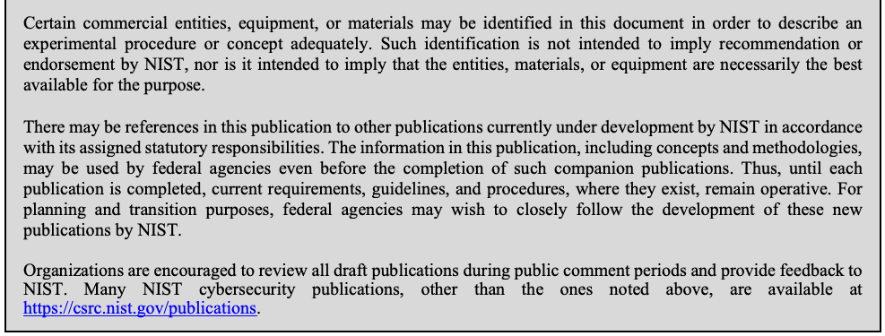
Comments on this publication may be submitted to:
本刊行物への意見は、次に提出できます:
未レビュー訳National Institute of Standards and Technology Attn: Computer Security Division, Information Technology Laboratory 100 Bureau Drive (Mail Stop 8930) Gaithersburg, MD 20899-8930 Email: 800-56C_Comments@nist.gov
国立標準技術研究所 宛先: Computer Security Division, Information Technology Laboratory 100 Bureau Drive (Mail Stop 8930) Gaithersburg, MD 20899-8930 電子メール: 800-56C_Comments@nist.gov
未レビュー訳All comments are subject to release under the Freedom of Information Act (FOIA).
すべての意見は、情報公開法（FOIA）に基づく公開対象です。
未レビュー訳Reports on Computer Systems Technology
コンピューターシステム技術報告
未レビュー訳The Information Technology Laboratory (ITL) at the National Institute of Standards and Technology (NIST) promotes the U.S. economy and public welfare by providing technical leadership for the Nation’s measurement and standards infrastructure. ITL develops tests, test methods, reference data, proof of concept implementations, and technical analyses to advance the development and productive use of information technology. ITL’s responsibilities include the development of management, administrative, technical, and physical standards and guidelines for the cost-effective security and privacy of other than national security-related information in federal information systems. The Special Publication 800-series reports on ITL’s research, guidelines, and outreach efforts in information system security, and its collaborative activities with industry, government, and academic organizations.
国立標準技術研究所（NIST）の情報技術研究所（ITL）は、米国の計量・標準インフラに技術的リーダーシップを提供し、米国経済と公共の福祉を支えている。ITLは、情報技術の発展と生産的利用を促進するため、試験、試験方法、参照データ、概念実証実装、技術分析を開発する。ITLは、国家安全保障関連以外の連邦情報システムにおける情報の費用対効果に優れたセキュリティとプライバシーを実現するため、管理上、運用上、技術上および物理的な標準とガイドラインの策定も担う。特別刊行物800シリーズは、情報システムセキュリティに関するITLの研究、ガイドライン、普及活動、および産業界、政府、学術機関との協力活動を報告する。
未レビュー訳Abstract
要約
未レビュー訳This Recommendation specifies techniques for the derivation of keying material from a shared secret established during a key-establishment scheme defined in NIST Special Publications 800-56A or 800-56B.
本推奨事項は、NIST特別刊行物800-56Aまたは800-56Bで定義される鍵確立方式において確立された共有秘密から鍵素材を導出する技法を規定する。
未レビュー訳Keywords
キーワード
未レビュー訳Expansion; extraction; extraction-then-expansion; hash function; key derivation; key establishment; message authentication code.
鍵拡張、乱数抽出、抽出後拡張、ハッシュ関数、鍵導出、鍵確立、メッセージ認証コード。
未レビュー訳ii
未レビュー訳Acknowledgements
謝辞
未レビュー訳The authors gratefully acknowledge the contributions on this and previous versions of this document by their NIST colleagues (Quynh Dang, Sharon Keller, John Kelsey, Allen Roginsky, Meltem Sonmez Turan, Apostol Vassilev, and Tim Polk) and by Miles Smid, formerly of Orion Security Solutions.
著者らは、本書および以前の版に貢献したNISTの同僚（Quynh Dang、Sharon Keller、John Kelsey、Allen Roginsky、Meltem Sonmez Turan、Apostol Vassilev、Tim Polk）ならびに、Orion Security Solutionsの元職員Miles Smidに深く感謝する。
未レビュー訳The authors also gratefully appreciate the thoughtful and instructive comments received during the public comment periods, which helped to improve the quality of this publication.
著者らはまた、公開意見募集期間中に寄せられ、本刊行物の質の向上に役立った、思慮深く有益な意見に深く感謝する。
未レビュー訳Conformance Testing
適合性試験
未レビュー訳Conformance testing for implementations of the functions that are specified in this publication will be conducted within the framework of the Cryptographic Algorithm Validation Program (CAVP) and the Cryptographic Module Validation Program (CMVP). The requirements on these implementations are indicated by the word “shall.” Some of these requirements may be out of scope for CAVP or CMVP validation testing and are therefore the responsibility of entities using, implementing, installing, or configuring applications that incorporate this Recommendation.
本刊行物で規定する関数の実装に対する適合性試験は、暗号アルゴリズム検証プログラム（CAVP）および暗号モジュール検証プログラム（CMVP）の枠組みで実施される。これらの実装に対する要件は「shall」という語で示される。要件の一部はCAVPまたはCMVPの検証試験の範囲外となる場合があり、その場合は本推奨事項を組み込んだアプリケーションを使用、実装、導入または構成する主体が責任を負う。
未レビュー訳iii
iii
未レビュー訳Patent Disclosure Notice
特許開示に関する通知
未レビュー訳NOTICE: The Information Technology Laboratory (ITL) has requested that holders of patent claims whose use may be required for compliance with the guidance or requirements of this publication disclose such patent claims to ITL. However, holders of patents are not obligated to respond to ITL calls for patents and ITL has not undertaken a patent search in order to identify which, if any, patents may apply to this publication.
通知: 情報技術研究所（ITL）は、本刊行物のガイダンスまたは要件への適合に使用が必要となる可能性のある特許請求の保有者に対し、その特許請求をITLに開示するよう求めている。ただし、特許保有者はITLによる特許照会に回答する義務を負わず、ITLも本刊行物に適用される可能性のある特許の有無を特定するための特許調査を行っていない。
未レビュー訳As of the date of publication and following call(s) for the identification of patent claims whose use may be required for compliance with the guidance or requirements of this publication, no such patent claims have been identified to ITL.
刊行日時点で、本刊行物のガイダンスまたは要件への適合に使用が必要となる可能性のある特許請求の特定を求めた照会を行った結果、ITLに対してそのような特許請求は特定されていない。
未レビュー訳No representation is made or implied by ITL that licenses are not required to avoid patent infringement in the use of this publication.
本刊行物の使用において特許侵害を避けるためのライセンスが不要であると、ITLが表明または暗示するものではない。
未レビュー訳iv
未レビュー訳Table of Contents
目次
未レビュー訳1 Introduction — 1
1 はじめに — 1
未レビュー訳2 Scope and Purpose — 2
2 適用範囲と目的 — 2
未レビュー訳3 Definitions, Symbols and Abbreviations — 3
3 定義、記号および略語 — 3
未レビュー訳3.1 Definitions — 3
3.1 定義 — 3
未レビュー訳3.2 Symbols and Abbreviations — 8
3.2 記号および略語 — 8
未レビュー訳4 One-Step Key Derivation — 11
4 1段階鍵導出 — 11
未レビュー訳4.1 Specification of Key-Derivation Functions — 11
4.1 鍵導出関数の仕様 — 11
未レビュー訳4.2 The Auxiliary Function H(x) and Related Parameters — 15
4.2 補助関数H(x)および関連パラメーター — 15
未レビュー訳5 Two-Step Key Derivation — 17
5 2段階鍵導出 — 17
未レビュー訳5.1 Specification of Key-Derivation Procedure — 17
5.1 鍵導出手順の仕様 — 17
未レビュー訳5.2 The Auxiliary MAC Algorithm and Related Parameters — 20
5.2 補助MACアルゴリズムおよび関連パラメーター — 20
未レビュー訳5.3 Randomness Extraction followed by Multiple Key Expansions — 21
5.3 乱数抽出とそれに続く複数の鍵拡張 — 21
未レビュー訳6 Application-Specific Key-Derivation Methods — 25
6 アプリケーション固有の鍵導出方法 — 25
未レビュー訳7 Selecting Hash Functions and MAC Algorithms — 26
7 ハッシュ関数およびMACアルゴリズムの選択 — 26
未レビュー訳8 Further Discussion — 28
8 追加の考察 — 28
未レビュー訳8.1 Using a Truncated Hash Function — 28
8.1 切り詰めハッシュ関数の使用 — 28
未レビュー訳8.2 The Choice of a Salt Value — 28
8.2 ソルト値の選択 — 28
未レビュー訳8.3 MAC Algorithms used for Extraction and Expansion — 28
8.3 抽出および拡張に用いるMACアルゴリズム — 28
未レビュー訳8.4 Destruction of Sensitive Locally Stored Data — 29
8.4 ローカルに保存された機密データの破棄 — 29
未レビュー訳References — 30
参考文献 — 30
未レビュー訳Appendix A: Revisions (Informative) — 32
付録A: 改訂履歴（参考情報） — 32
未レビュー訳A.1 The Original Version of SP 800-56C — 32
A.1 SP 800-56C初版 — 32
未レビュー訳A.2 Revision 1 — 32
A.2 改訂第1版 — 32
未レビュー訳A.3 Revision 2 — 32
A.3 改訂第2版 — 32
未レビュー訳v
未レビュー訳List of Figures
図一覧
未レビュー訳Figure 1: The Extraction-then-Expansion Key-Derivation Procedure — 17
図1: 抽出後拡張による鍵導出手順 — 17
未レビュー訳Figure 2: Randomness Extraction followed by Multiple Key Expansions — 22
図2: 乱数抽出とそれに続く複数の鍵拡張 — 22
未レビュー訳List of Tables
表一覧
未レビュー訳Table 1: H(x) = hash(x) (Option 1) — 15
表1: H(x) = hash(x)（オプション1）— 15
未レビュー訳Table 2: H(x) = HMAC-hash(salt, x) (Option 2) — 15
表2: H(x) = HMAC-hash(salt, x)（オプション2）— 15
未レビュー訳Table 3: H(x) = KMAC#(salt, x, H_outputBits, “KDF”) (Option 3) — 16
表3: H(x) = KMAC#(salt, x, H_outputBits, “KDF”)（オプション3）— 16
未レビュー訳Table 4: MAC( salt, Z, …) = HMAC-hash( salt, Z ) (For Randomness Extraction) — 20
表4: MAC(salt, Z, …) = HMAC-hash(salt, Z)（乱数抽出用）— 20
未レビュー訳Table 5: MAC( salt, Z, …) = AES-N-CMAC( salt, Z ) (For Randomness Extraction). 21
表5: MAC(salt, Z, …) = AES-N-CMAC(salt, Z)（乱数抽出用）— 21
未レビュー訳vi
未レビュー訳1 Introduction
1 はじめに
未レビュー訳During the execution of a public key-based key-establishment scheme specified in either of the National Institute of Standards and Technology (NIST) Special Publications [SP 800-56A]1 or [SP 800-56B],2 a key-derivation method may be required to obtain secret cryptographic keying material. This Recommendation specifies the key-derivation methods that can be used, as needed, in those key-establishment schemes. The keying material derived using these methods shall be computed in its entirety before outputting any portion of it and shall only be used as secret keying material, such as a symmetric key used for data encryption or message integrity, a secret initialization vector, or, perhaps, a key-derivation key that will be used to generate additional keying material (possibly using a different derivation process; see [SP 800-108]3). The derived keying material shall not be used as a key stream for a stream cipher.
国立標準技術研究所（NIST）の特別刊行物[SP 800-56A]1または[SP 800-56B]2に規定される公開鍵ベースの鍵確立方式の実行中に、秘密の暗号鍵素材を得るため鍵導出方法が必要となる場合がある。本推奨事項は、これらの鍵確立方式で必要に応じて使用できる鍵導出方法を規定する。これらの方法で導出する鍵素材は、その一部を出力する前に全体を計算しなければならず、データ暗号化またはメッセージ完全性のための対称鍵、秘密の初期化ベクトル、あるいは追加の鍵素材（別の導出処理を使用する場合もある。 [SP 800-108]3参照）の生成に用いる鍵導出鍵など、秘密の鍵素材としてのみ使用しなければならない。導出した鍵素材をストリーム暗号のキーストリームとして使用してはならない。
未レビュー訳1 SP 800-56A, Recommendation for Pair-Wise Key-Establishment Schemes Using Discrete Logarithm Cryptography
1 SP 800-56A「離散対数暗号を用いるペアワイズ鍵確立方式に関する推奨事項」
未レビュー訳2 Scope and Purpose
2 適用範囲と目的
未レビュー訳This Recommendation specifies two categories of key-derivation methods that can be employed, as required, to derive keying material from a shared secret Z generated during the execution of a key-establishment scheme specified in [SP 800-56A] or [SP 800-56B].
本推奨事項は、[SP 800-56A]または[SP 800-56B]に規定された鍵確立方式の実行中に生成される共有秘密Zから、必要に応じて鍵素材を導出するために使用できる2種類の鍵導出方法を規定する。
未レビュー訳In addition to the currently approved techniques for the generation of the shared secret Z as specified in SP 800-56A and SP 800-56B, this Recommendation permits the use of a “hybrid” shared secret of the form Z′= Z || T, a concatenation consisting of a “standard” shared secret Z that was generated during the execution of a key-establishment scheme (as currently specified in [SP 800-56A] or [SP 800-56B]) followed by an auxiliary shared secret T that has been generated using some other method. The content, format, length, and method used to generate T must be known and agreed upon by all parties that will rely upon the derived keying material, as well as by any agents trusted to act on their behalf. The key-derivation methods specified in this Recommendation will process a hybrid Z′in the same way they process a standard Z. Therefore, for simplicity of notation and exposition, any shared secret denoted by the symbol Z in the remainder of this Recommendation can be of either the “standard” or “hybrid” variety.
[SP 800-56A]または[SP 800-56B]に規定された共有秘密Zの生成に関する現行の承認済み技法に加え、本推奨事項では、Z′= Z || Tという形式の「ハイブリッド」共有秘密の使用を認める。これは、鍵確立方式の実行中に生成された「標準」共有秘密Z（現行の[SP 800-56A]または[SP 800-56B]の規定による）に、別の方法で生成された補助共有秘密Tを連結したものである。導出した鍵素材に依存するすべての当事者、およびその代理として行動することを信頼されたエージェントは、Tの内容、形式、長さ、生成方法を認識し、合意していなければならない。本推奨事項の鍵導出方法は、標準Zと同じ方法でハイブリッドZ′を処理する。したがって、記法と説明を簡潔にするため、本推奨事項の以降でZと表記する共有秘密は、「標準」型または「ハイブリッド」型のいずれでもよい。
未レビュー訳The first category of specified key-derivation methods consists of a family of one-step key-derivation functions that derive keying material of a desired length from a shared secret that was generated during the execution of a key-establishment scheme (and possibly other information as well).
規定する鍵導出方法の第1の種類は、鍵確立方式の実行中に生成された共有秘密（および場合によってはその他の情報）から、所望の長さの鍵素材を導出する1段階鍵導出関数群である。
未レビュー訳The second category consists of an extraction-then-expansion key-derivation procedure that involves two steps: 1) Randomness extraction, to obtain a single cryptographic key-derivation key from a shared secret generated during the execution of a key-establishment scheme. 2) Key expansion, to derive keying material of the desired length from that key-derivation key and other information. Since NIST’s [SP 800-108] specifies several families of key-derivation functions that are approved for deriving additional keying material from a given cryptographic key-derivation key, those functions are employed in the second (key-expansion) step of these two-step procedures.
第2の種類は、次の2段階からなる抽出後拡張型の鍵導出手順である。1) 乱数抽出: 鍵確立方式の実行中に生成された共有秘密から、単一の暗号鍵導出鍵を得る。2) 鍵拡張: その鍵導出鍵およびその他の情報から、所望の長さの鍵素材を導出する。NISTの[SP 800-108]は、与えられた暗号鍵導出鍵から追加の鍵素材を導出するために承認された複数の鍵導出関数群を規定しているため、これらの関数を2段階手順の第2段階（鍵拡張）で使用する。
未レビュー訳In addition to the key-derivation methods whose specifications are provided in this document, [SP 800-135]4 describes several variants (of both the one-step and two-step methods) that are approved for specific applications.
本書に仕様を記載する鍵導出方法に加え、[SP 800-135]4は、特定用途向けに承認された1段階方式および2段階方式の複数の変形を記載する。
未レビュー訳3 Definitions, Symbols, and Abbreviations
3 定義、記号および略語
未レビュー訳3.1 Definitions
3.1 定義
未レビュー訳原本PDFの抜粋画像
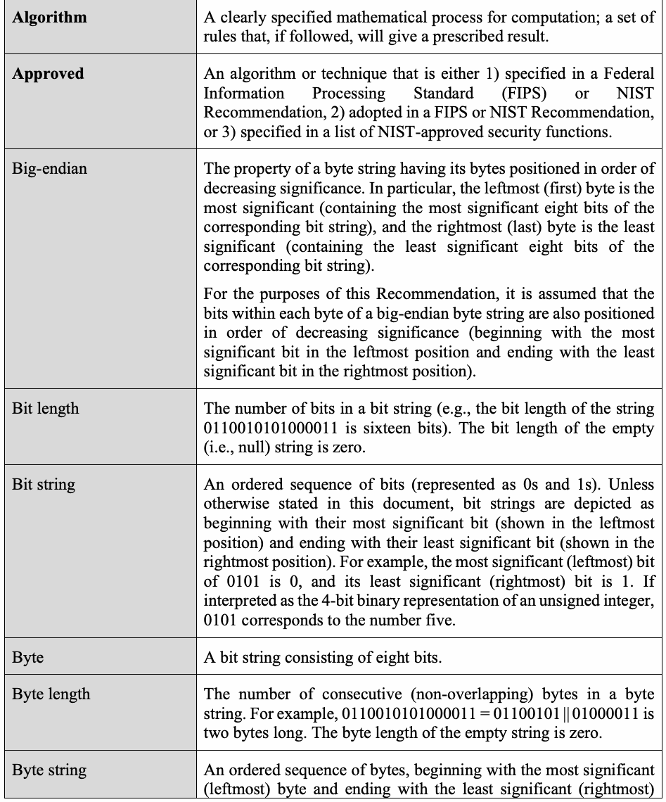
| byte. Any bit string whose bit length is a multiple of eight can be viewed as the concatenation of an ordered sequence of bytes (i.e., a byte string). For example, the bit string 0110010101000011 can be viewed as a byte string since it is the concatenation of two bytes: 01100101 followed by 01000011. | |
| Concatenation | As used in this Recommendation, the concatenation X || Y of bit string X followed by bit string Y is the ordered sequence of bits formed by appending Y to X in such a way that the leftmost (i.e., initial) bit of Y follows the rightmost (i.e., final) bit of X. |
| Cryptographic key (Key) | A parameter used with a cryptographic algorithm that determines its operation. |
| Estimated maximum security strength | An estimate of the largest security strength that can be attained by a cryptographic mechanism given the explicit and implicit assumptions that are made regarding its implementation and supporting infrastructure (e.g., the algorithms employed, the selection of associated primitives and/or auxiliary functions, the choices for various parameters, the methods of generation and/or protection for any required keys, etc.). The estimated maximum security strengths of various approved cryptographic mechanisms are provided in [SP 800-57]. |
| Hash function | A function that maps a bit string of arbitrary length to a fixed-length bit string. Depending upon the relying application, the security strength that can be supported by a hash function is typically measured by the extent to which it possesses one or more of the following properties: 1. (Collision resistance) It is computationally infeasible to find any two distinct inputs that map to the same output. 2. (Preimage resistance) Given a randomly chosen target output, it is computationally infeasible to find any input that maps to that output. (This property is called the one-way property.) 3. (Second preimage resistance) Given one input value, it is computationally infeasible to find a second (distinct) input value that maps to the same output as the first value. This Recommendation uses the strength of the preimage resistance of a hash function as a contributing factor when determining the security strength provided by a key-derivation method. |
原本PDFの抜粋画像
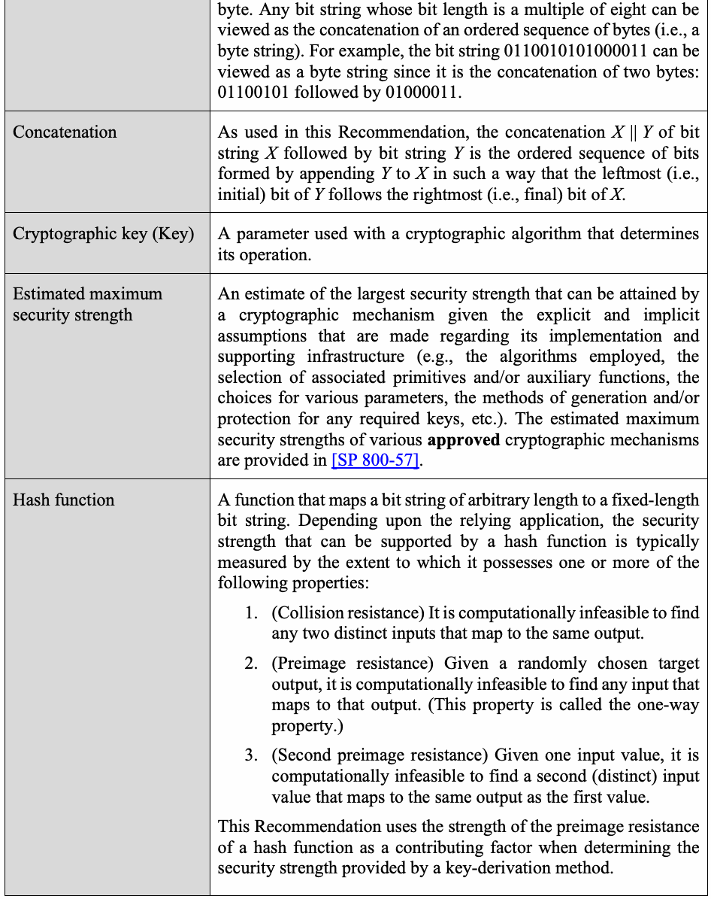
| バイト。ビット長が8の倍数であるビット列は、順序付きバイト列（すなわちバイト列）の連結として扱える。例えば、ビット列0110010101000011は、01100101に続いて01000011を連結したものなので、バイト列として扱える。 | |
| Concatenation 連結 | 本推奨事項におけるビット列Xの後にビット列Yを連結する操作X || Yは、Xの右端（末尾）ビットの直後にYの左端（先頭）ビットを続けることで得られる、ビットの順序付き列である。 |
| Cryptographic key (Key) 暗号鍵（鍵） | 暗号アルゴリズムとともに用い、その動作を決定するパラメーター。 |
| Estimated maximum security strength 推定最大セキュリティ強度 | 実装およびそれを支えるインフラ（使用アルゴリズム、関連プリミティブや補助関数の選択、各種パラメーターの選択、必要な鍵の生成・保護方法など）に関する明示的および暗黙的な前提を踏まえ、暗号メカニズムが達成できる最大セキュリティ強度の推定値。各種の承認済み暗号メカニズムの推定最大セキュリティ強度は[SP 800-57]に示される。 |
| Hash function ハッシュ関数 | 任意長のビット列を固定長のビット列に写像する関数。依存するアプリケーションに応じ、ハッシュ関数が支援できるセキュリティ強度は通常、次の性質の1つ以上をどの程度備えるかで測定される。1.（衝突耐性）同じ出力に写像される異なる入力を2つ見つけることが計算量的に実行不可能である。2.（原像計算困難性）ランダムに選ばれた出力目標に写像される入力を見つけることが計算量的に実行不可能である（この性質を一方向性という）。3.（第二原像計算困難性）1つの入力値が与えられたとき、同じ出力に写像される別の入力値を見つけることが計算量的に実行不可能である。本推奨事項では、鍵導出方法が提供するセキュリティ強度を決定する際の要因として、ハッシュ関数の原像計算困難性の強度を用いる。 |
| Approved hash functions are specified in [FIPS 180]5 and [FIPS 202].6 | |
| Key-derivation function | As used in this Recommendation, either a one-step key-derivation method or a key-derivation function based on a pseudorandom function as specified in [SP 800-108]. |
| Key-derivation method | As used in this Recommendation, a process that derives secret keying material from a shared secret. This Recommendation specifies both one-step and two-step key-derivation methods. |
| Key-derivation procedure | As used in this Recommendation, a two-step key-derivation method consisting of randomness extraction followed by key expansion. |
| Key-derivation key | As used in this Recommendation, a key that is used during the key- expansion step of a key-derivation procedure to derive the secret output keying material. This key-derivation key is obtained from a shared secret during the randomness-extraction step. |
| Key establishment | A procedure that results in secret keying material that is shared among different parties. |
| Key expansion | The second step in the key-derivation procedure specified in this Recommendation in which a key-derivation key is used to derive secret keying material having the desired length. |
| Keying material | Data that is represented as a binary string such that any non- overlapping segments of the string with the required lengths can be used as secret keys, secret initialization vectors, and other secret parameters. |
| Message Authentication Code (MAC) algorithm | A family of cryptographic functions that is parameterized by a symmetric key. Each of the functions can act on input data (called a “message”) of variable length to produce an output value of a specified length. The output value is called the MAC of the input message. MAC(k, x, …) is used to denote the MAC of message x computed using the key k (and any additional algorithm-specific parameters). An approved MAC algorithm is expected to satisfy the following property (for each supported security strength): |
原本PDFの抜粋画像
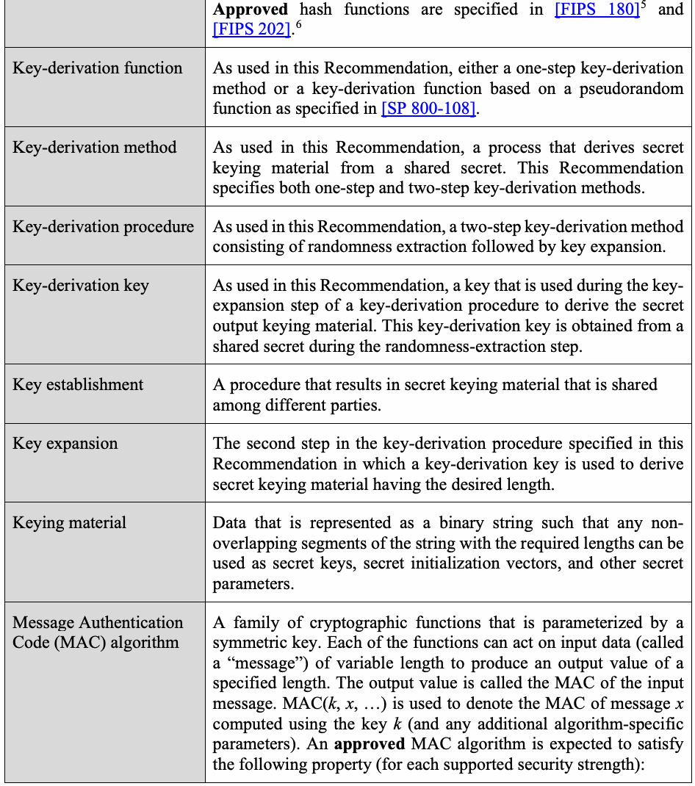
| 承認済みハッシュ関数は[FIPS 180]5および[FIPS 202]6に規定される。 | |
| Key-derivation function 鍵導出関数 | 本推奨事項では、1段階鍵導出方法、または[SP 800-108]に規定される疑似乱数関数に基づく鍵導出関数をいう。 |
| Key-derivation method 鍵導出方法 | 本推奨事項では、共有秘密から秘密の鍵素材を導出する処理をいう。本推奨事項は1段階および2段階の鍵導出方法を規定する。 |
| Key-derivation procedure 鍵導出手順 | 本推奨事項では、乱数抽出に続いて鍵拡張を行う2段階の鍵導出方法をいう。 |
| Key-derivation key 鍵導出鍵 | 本推奨事項では、鍵導出手順の鍵拡張段階で秘密の出力鍵素材を導出するために使用する鍵をいう。この鍵導出鍵は、乱数抽出段階に共有秘密から得られる。 |
| Key establishment 鍵確立 | 複数の当事者間で共有される秘密の鍵素材を生成する手順。 |
| Key expansion 鍵拡張 | 本推奨事項で規定する鍵導出手順の第2段階。所望の長さの秘密鍵素材を導出するために鍵導出鍵を使用する。 |
| Keying material 鍵素材 | 必要な長さの重複しない部分列を、秘密鍵、秘密の初期化ベクトル、その他の秘密パラメーターとして使用できるよう、2進列で表されるデータ。 |
| Message Authentication Code (MAC) algorithm メッセージ認証コード（MAC）アルゴリズム | 対称鍵をパラメーターとする暗号関数族。各関数は可変長の入力データ（「メッセージ」と呼ぶ）を処理し、指定された長さの出力値を生成する。この出力値を入力メッセージのMACと呼ぶ。MAC(k, x, …)は、鍵k（およびアルゴリズム固有の追加パラメーター）でメッセージxから計算したMACを表す。承認済みMACアルゴリズムは、支援する各セキュリティ強度について、次の性質を満たすことが期待される。 |
| Without knowledge of the key k, it must be computationally infeasible to predict the (as-yet-unseen) value of MAC(k, x, …) with a probability of success that is a significant improvement over simply guessing either the MAC value or k, even if one has already seen the results of using that same key to compute MAC(k, x_j, …) for (a bounded number of) other messages x_j ≠ x A MAC algorithm can be employed to provide authentication of the origin of data and/or to provide data-integrity protection. In this Recommendation, approved MAC algorithms are used to determine families of pseudorandom functions (indexed by the choice of key) that may be employed during key derivation. | |
| Nonce | A varying value that has, at most, a negligible chance of repeating; for example, a random value that is generated anew for each use, a timestamp, a sequence number, or some combination of these. |
| Pseudorandom function family (PRF) | An indexed family of (efficiently computable) functions, each defined for the same particular pair of input and output spaces. (For the purposes of this Recommendation, one may assume that both the index set and the output space are finite.) The indexed functions are pseudorandom in the following sense: If a function from the family is selected by choosing an index value uniformly at random, and one’s knowledge of the selected function is limited to the output values corresponding to a feasible number of (adaptively) chosen input values, then the selected function is computationally indistinguishable from a function whose outputs were fixed uniformly at random. |
| Randomness extraction | The first step in the two-step key-derivation procedure specified in this Recommendation; during this step, a key-derivation key is produced from a shared secret. |
| Salt | As used in this Recommendation, a byte string (which may be secret or non-secret) that is used as a MAC key by either: 1) a MAC-based auxiliary function H employed in one-step key derivation or 2) a MAC employed in the randomness-extraction step during two-step key derivation. |
| Security strength | A number characterizing the amount of work that is expected to suffice to “defeat” an implemented cryptographic mechanism (e.g., by compromising its functionality and/or circumventing the protection that its use was intended to facilitate). In this Recommendation, security strength is measured in bits. If the security strength of a particular implementation of a cryptographic |
原本PDFの抜粋画像
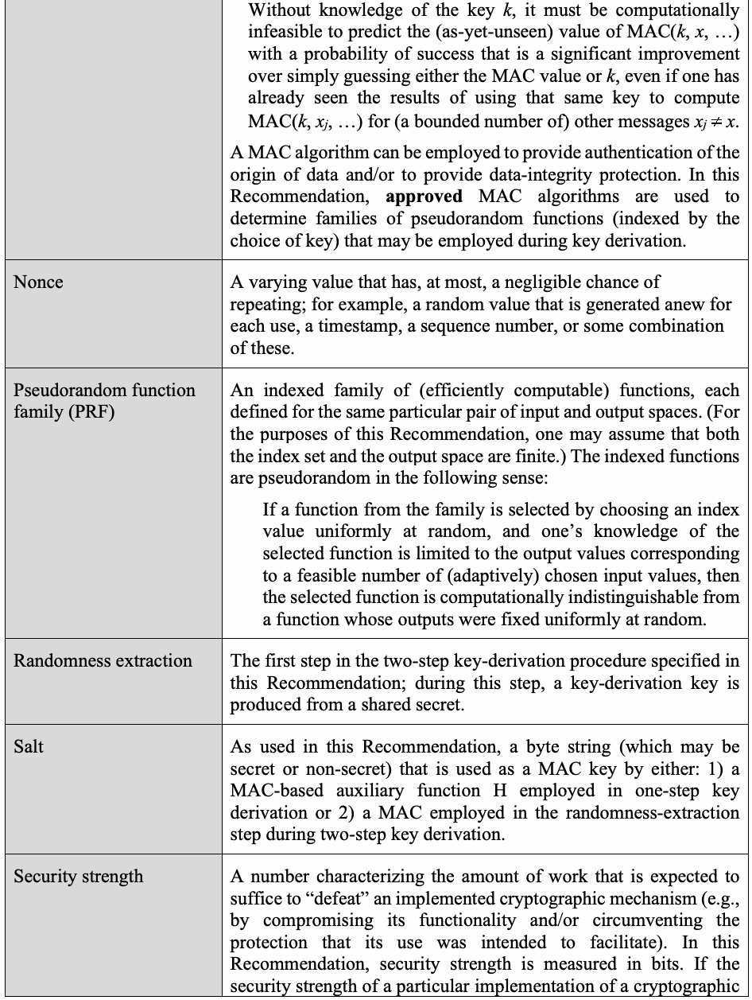
| 鍵kを知らずに、MAC(k, x, …)の（まだ観測されていない）値を予測することは、MAC値またはkを単に推測する場合を大幅に上回る成功確率では、計算量的に実行不可能でなければならない。これは、同じ鍵を用いて他のメッセージx ≠ x_jについてMAC(k, x_j, …)を計算した結果を（有限個）すでに見ている場合も同様である。MACアルゴリズムは、データの出所認証および／またはデータ完全性保護に使用できる。本推奨事項では、承認済みMACアルゴリズムを用いて、鍵導出に使用できる疑似乱数関数族（鍵の選択で索引付けされる）を定める。 | |
| Nonce ノンス | 繰り返される可能性が無視できる程度に低い変化値。例えば、使用ごとに新たに生成する乱数値、タイムスタンプ、シーケンス番号、またはそれらの組合せ。 |
| Pseudorandom function family (PRF) 疑似乱数関数族（PRF） | 同じ特定の入力空間と出力空間の組に対してそれぞれ定義される、（効率的に計算可能な）関数の索引付き族（本推奨事項では、索引集合と出力空間は有限と仮定してよい）。選択した関数の知識が、実行可能な個数の（適応的に選ばれた）入力値に対応する出力値に限られる場合、その関数は、出力が一様ランダムに固定された関数と計算量的に区別できない。 |
| Randomness extraction 乱数抽出 | 本推奨事項で規定する2段階鍵導出手順の第1段階。この段階で、共有秘密から鍵導出鍵を生成する。 |
| Salt ソルト | 本推奨事項では、次のいずれかのMAC鍵として用いる（秘密または非秘密の）バイト列をいう。1) 1段階鍵導出で用いるMACベースの補助関数H、2) 2段階鍵導出の乱数抽出段階で用いるMAC。 |
| Security strength セキュリティ強度 | 実装された暗号メカニズムを「破る」（機能を侵害する、またはその使用による保護を回避するなど）ために必要と見込まれる作業量を特徴付ける数値。本推奨事項では、セキュリティ強度をビット単位で測る。特定実装のセキュリティ強度がsビットである場合、何らかの基本操作をおよそ2^s回行うことが、その実装を何らかの方法で破るのに十分と予想される。 |
| mechanism is s bits, it is expected that the equivalent of (roughly) 2^s basic operations of some sort will be sufficient to defeat it in some way. | |
| Shared secret | The secret byte string that is computed/generated during the execution of an approved key-establishment scheme and used as input to a key-derivation method as part of that transaction. |
| Shall | A requirement that needs to be fulfilled to claim conformance to this Recommendation. Note that shall may be coupled with not to become shall not. |
| Support (a security strength) | A security strength of s bits is said to be supported by a particular choice of algorithm, primitive, auxiliary function, or parameters for use in the implementation of a cryptographic mechanism if that choice will not prevent the resulting implementation from attaining a security strength of at least s bits. In this Recommendation, it is assumed that implementation choices are intended to support a security strength of 112 bits or more (see [SP 800-57]7 and [SP 800-131A]8). |
| Symmetric key | A single cryptographic key that is used with a symmetric-key algorithm; also called a secret key. A symmetric-key algorithm is a cryptographic algorithm that uses the same secret key for an operation and its complement (e.g., encryption and decryption). |
| Targeted security strength | The security strength that is intended to be supported by one or more implementation-related choices (such as algorithms, primitives, auxiliary functions, parameter sizes, and/or actual parameters) for the purpose of implementing a cryptographic mechanism. |
原本PDFの抜粋画像
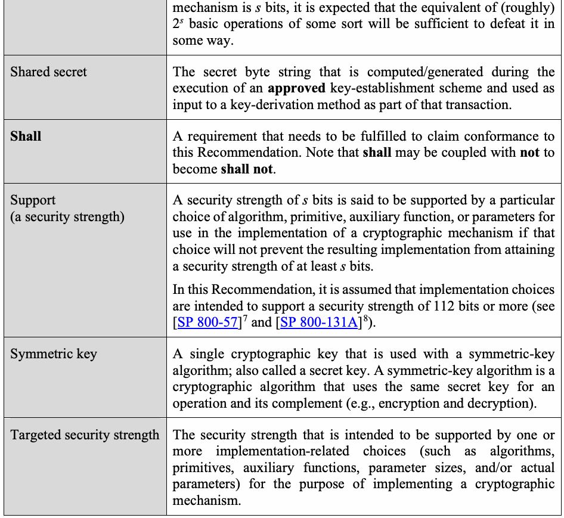
| メカニズムのセキュリティ強度がsビットである場合、何らかの基本操作をおよそ2^s回行うことが、それを何らかの方法で破るのに十分と予想される。 | |
| Shared secret 共有秘密 | 承認済み鍵確立方式の実行中に計算または生成され、その処理の一部として鍵導出方法への入力に使用される秘密のバイト列。 |
| Shall | 本推奨事項への適合を主張するために満たす必要がある要件。「shall」に「not」を伴って「shall not」となる場合がある。 |
| Support (a security strength) （セキュリティ強度を）支援する | 暗号メカニズムの実装に用いるアルゴリズム、プリミティブ、補助関数またはパラメーターの選択が、結果の実装で少なくともsビットのセキュリティ強度を達成することを妨げない場合、その選択はsビットのセキュリティ強度を支援するとする。本推奨事項では、実装上の選択は112ビット以上のセキュリティ強度を支援するものとする（[SP 800-57]7および[SP 800-131A]8参照）。 |
| Symmetric key 対称鍵 | 対称鍵アルゴリズムに使用する単一の暗号鍵。秘密鍵とも呼ぶ。対称鍵アルゴリズムとは、操作とその逆操作（例: 暗号化と復号）に同じ秘密鍵を使う暗号アルゴリズムである。 |
| Targeted security strength 目標セキュリティ強度 | 暗号メカニズムを実装する目的で、アルゴリズム、プリミティブ、補助関数、パラメーターサイズおよび／または実際のパラメーターなど、1つ以上の実装関連の選択によって支援することを意図したセキュリティ強度。 |
3.2 Symbols and Abbreviations
3.2 記号および略語
未レビュー訳| 0x | A marker used to indicate that the following symbols are to be interpreted as a bit string written in hexadecimal notation (using the symbols 0, 1, …, 9 and A, B, …, F to denote 4-bit binary representations of the integers zero through nine and 10 through 15, respectively). A byte can be represented by a hexadecimal string of length two; the leftmost hexadecimal symbol corresponds to the most significant four bits of the byte, and the rightmost hexadecimal symbol corresponds to the least significant four bits of the byte. For example, 0x9D represents the bit string 10011101 (assuming that the bits are positioned in order of decreasing significance). |
| AES | Advanced Encryption Standard (the block cipher specified in [FIPS 197]9). |
| AES-N (N = 128, 192, or 256) | The variant of the AES block cipher that requires an N-bit encryption/decryption key; the three variants specified in [FIPS 197] are AES-128, AES-192, and AES-256. |
| AES-CMAC | The Cipher-based Message Authentication Code (CMAC) mode of operation for the AES block cipher, as specified in [SP 800- 38B]10. |
| AES-N-CMAC(k, x) (N = 128, 192, or 256) | An implementation of AES-CMAC based on the AES-N variant of the AES block cipher (for N = 128, 192, or 256); its output is a 128-bit MAC computed over the “message” x using the key k. |
| counter | An unsigned integer, represented as a big-endian four-byte string, that is employed by the one-step key-derivation method specified in Section 4.1. |
| Context | A bit string of context-specific data; a subcomponent of the FixedInfo that is included as part of the input to the two-step key- derivation method specified in Section 5.1. |
| default_salt | A default value assigned to salt (if necessary) to implement an auxiliary function H selected according to Option 2 or 3 in the one- step key-derivation method specified in Section 4.1. |
原本PDFの抜粋画像
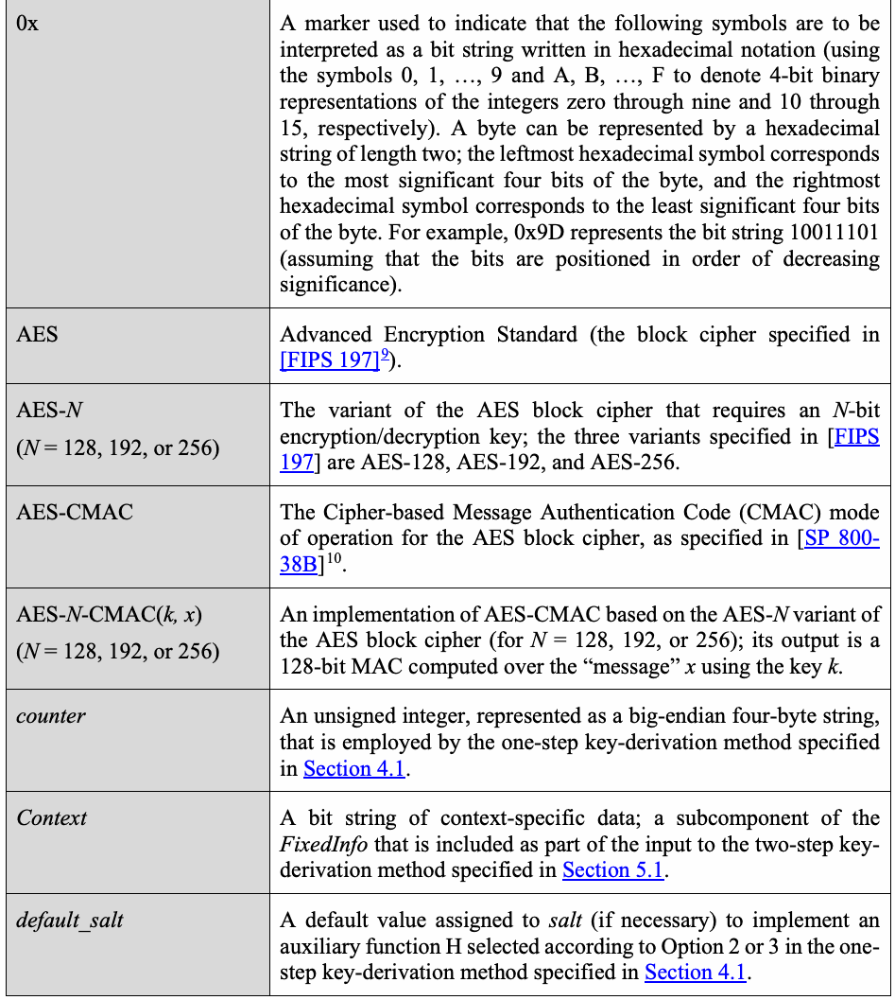
| 0x | 後続の記号を16進表記のビット列として解釈することを示す標識（整数0～9および10～15の4ビット2進表現を、それぞれ0～9およびA～Fで表す）。1バイトは長さ2の16進文字列で表せる。左端の16進記号はバイトの最上位4ビット、右端は最下位4ビットに対応する。例えば、0x9Dはビット列10011101を表す（ビットが重要度の降順に配置されているとする）。 |
| AES | Advanced Encryption Standard（[FIPS 197]9に規定されるブロック暗号）。 |
| AES-N (N = 128, 192, or 256) | Nビットの暗号化／復号鍵を必要とするAESブロック暗号の変種。[FIPS 197]が規定する3種類はAES-128、AES-192、AES-256。 |
| AES-CMAC | [SP 800-38B]10に規定される、AESブロック暗号の暗号ベースメッセージ認証コード（CMAC）運用モード。 |
| AES-N-CMAC(k, x) (N = 128, 192, or 256) | AESブロック暗号のAES-N変種（N = 128、192または256）に基づくAES-CMACの実装。鍵kを用いて「メッセージ」xを処理し、128ビットMACを出力する。 |
| counter | 4バイトのビッグエンディアン文字列で表す符号なし整数。4.1節に規定する1段階鍵導出方法で使用する。 |
| Context | コンテキスト固有データのビット列。5.1節に規定する2段階鍵導出方法への入力に含まれるFixedInfoの構成要素。 |
| default_salt | 4.1節の1段階鍵導出方法でオプション2または3に従って選択した補助関数Hの実装に必要に応じてsaltへ割り当てる既定値。 |
原本PDFの抜粋画像
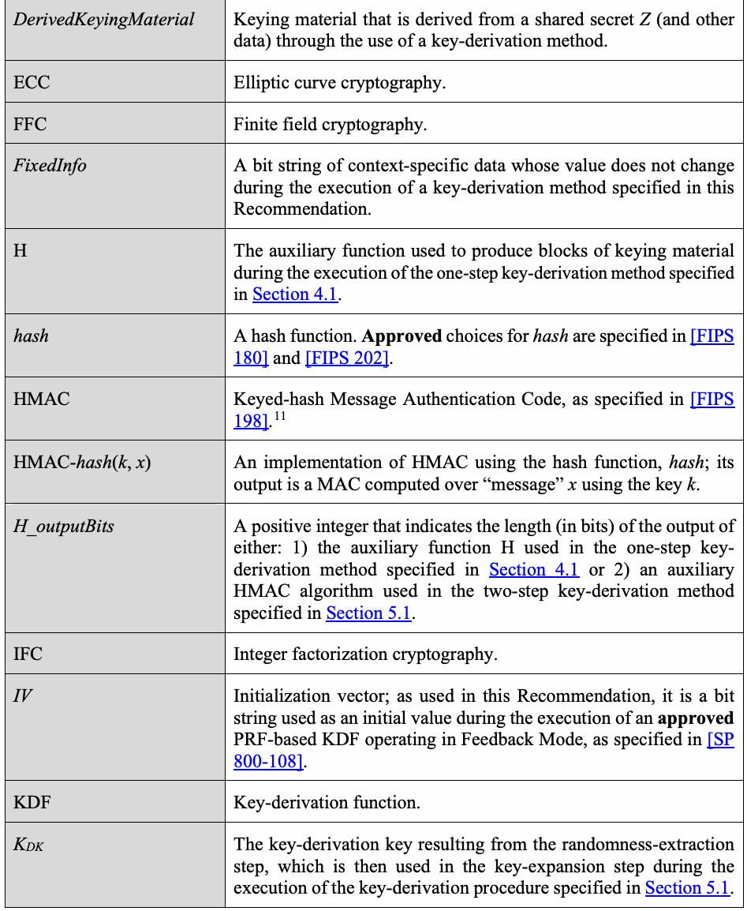
原本PDFの抜粋画像
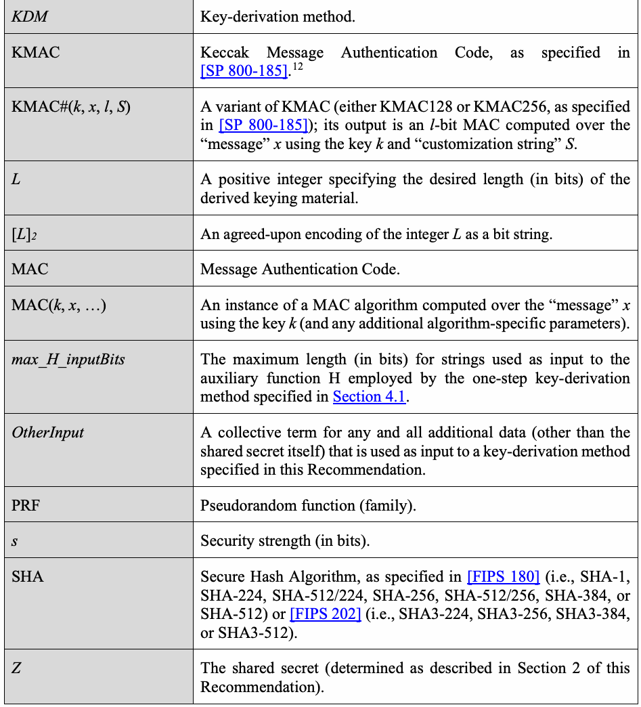
4 One-Step Key Derivation
4 1段階鍵導出
未レビュー訳This section specifies a family of approved key-derivation functions (KDFs) that are executed in a single step; a two-step procedure is specified in Section 5. The input to each specified KDF includes the shared secret Z, an indication of the desired bit length of the keying material to be output, and, perhaps, other information (as determined by the particular implementation of the key-establishment scheme and/or key-derivation function).
本節では、1段階で実行する承認済み鍵導出関数（KDF）群を規定する。2段階手順は5節に規定する。各KDFの入力には、共有秘密Z、出力する鍵素材の所望のビット長、および（鍵確立方式または鍵導出関数の特定実装によって決まる）その他の情報が含まれる場合がある。
未レビュー訳Implementations of these one-step KDFs depend upon the choice of an auxiliary function H, which can be either: 1) an approved hash function, denoted as hash, as defined in [FIPS 180] or [FIPS 202]; 2) HMAC with an approved hash function, hash, denoted as HMAC-hash and defined in [FIPS 198]; or 3) a KMAC variant, as defined in [SP 800-185]. Tables 1, 2, and 3 in Section 4.2 describe the possibilities for H and also include any restrictions on the associated implementation-dependent parameters. H shall be chosen in accordance with the selection requirements specified in Section 7.
これらの1段階KDFの実装は、補助関数Hの選択に依存する。Hには、1) [FIPS 180]または[FIPS 202]に定義される承認済みハッシュ関数hash、2) [FIPS 198]に定義される、承認済みハッシュ関数hashを用いたHMAC-hash、3) [SP 800-185]に定義されるKMAC変種を使用できる。4.2節の表1、2、3はHの選択肢と、実装依存パラメーターに関する制限を示す。Hは7節の選択要件に従って選ばなければならない。
未レビュー訳When an approved MAC algorithm (HMAC or KMAC) is used to define the auxiliary function H, it is permitted to use a known salt value as the MAC key. In such cases, it is assumed that the MAC algorithm will satisfy the following property (for each of its supported security strengths):
承認済みMACアルゴリズム（HMACまたはKMAC）を補助関数Hの定義に用いる場合、既知のソルト値をMAC鍵として使用してよい。この場合、MACアルゴリズムは支援する各セキュリティ強度について、次の性質を満たすものとする。
未レビュー訳Given knowledge of the key k, and (perhaps) partial knowledge of a message x that includes an unknown substring y, it must be computationally infeasible to predict the (as-yet-unseen) value of MAC(k, x, …) with a probability of success that is a significant improvement over simply guessing either the MAC value or the value of y, even if one has already seen the values of MAC(k_j, x_j, …) for a feasible number of other (k_j, x_j) pairs where each key k_j is known and each (partially known) message x_j includes the same unknown substring y, provided that none of the (k_j, x_j) pairs is identical to (k, x).
鍵kが既知で、未知の部分文字列yを含むメッセージxの一部も（おそらく）既知である場合、MAC(k, x, …)の（未観測の）値を予測することは、MAC値またはyの値を単に推測する場合を大幅に上回る成功確率で行うことが計算量的に実行不可能でなければならない。同じ鍵を用いて他のメッセージx_j ≠ xについてMAC(k, x_j, …)を計算した結果を（有界個数）すでに見ている場合も同様である。各鍵k_jは既知で、各（部分的に既知の）メッセージx_jは同じ未知部分文字列yを含み、いずれの(k_j, x_j)の組も(k, x)と同一ではない。
未レビュー訳This property is consistent with the use of the MAC algorithm as the specification of a family of pseudorandom functions defined on the appropriate message space and indexed by the choice of MAC key. Under Option 2 and Option 3 of the KDF specification below, the auxiliary function H is a particular selection from such a family. The (partially known) messages will have the form counter || Z || FixedInfo, containing the shared secret Z as an unknown substring.
この性質は、MACアルゴリズムを、適切なメッセージ空間で定義され、MAC鍵の選択によって索引付けされる疑似乱数関数族の仕様として用いることと整合する。以下のKDF仕様のオプション2および3では、補助関数Hはそのような関数族から特定の関数を選択する。（部分的に既知の）メッセージはcounter || Z || FixedInfoの形式となり、共有秘密Zを未知部分文字列として含む。
未レビュー訳4.1 Specification of Key-Derivation Functions
4.1 鍵導出関数の仕様
未レビュー訳A family of one-step key-derivation functions is specified as follows:
1段階鍵導出関数族を次のように規定する。
未レビュー訳Function call: KDM( Z, OtherInput).
関数呼び出し: KDM(Z, OtherInput)。
未レビュー訳Options for the Auxiliary Function H: Option 1: H(x) = hash(x), where hash is an approved hash function meeting the selection requirements specified in Section 7, and the input, x, is a bit string. Option 2: H(x) = HMAC-hash(salt, x), where HMAC-hash is an implementation of the HMAC
補助関数Hのオプション: オプション1: H(x) = hash(x)。hashは7節の選択要件を満たす承認済みハッシュ関数であり、入力xはビット列である。オプション2: H(x) = HMAC-hash(salt, x)。HMAC-hashは、7節の選択要件を満たす承認済みハッシュ関数hashを用いるHMACの実装である。
未レビュー訳algorithm (as defined in [FIPS 198]) employing an approved hash function, hash, that meets the selection requirements specified in Section 7. An implementation-dependent byte string, salt, whose (non-null) value may be optionally provided in
[FIPS 198]に定義されるアルゴリズム。実装依存のバイト列salt（非ヌル値）は、OtherInputに任意に含めてよく、
未レビュー訳OtherInput, serves as the HMAC key, and x (the input to H) is a bit string that serves as the HMAC “message” as specified in [FIPS 198]. Option 3: H(x) = KMAC#(salt, x, H_outputBits, S), where KMAC# is a particular implementation of either KMAC128 or KMAC256 (as defined in [SP 800-185]) that meets the selection requirements specified in Section 7. An implementation-dependent byte string, salt, whose (non-null) value may be optionally provided in OtherInput, serves as the KMAC# key, and x (the input to H) is a bit string that serves as the KMAC# “message” as specified in [SP 800-185]. The parameter H_outputBits determines the bit length chosen for the output of the KMAC variant employed. The “customization string” S shall be the byte string 01001011 || 01000100 || 01000110, which represents the sequence of characters “K”, “D,” and “F” in 8-bit ASCII. (This three-byte string is denoted by “KDF” in this document.)
OtherInputに含まれるsaltはHMAC鍵として機能し、Hへの入力x（ビット列）は[FIPS 198]に定めるHMACの「メッセージ」として機能する。オプション3: H(x) = KMAC#(salt, x, H_outputBits, S)。KMAC#は[SP 800-185]に定義され、7節の選択要件を満たすKMAC128またはKMAC256の特定実装である。実装依存のバイト列salt（非ヌル値）はOtherInputに任意に含めてよく、KMAC#鍵として機能する。Hへの入力xは同規格に定めるKMAC#の「メッセージ」として機能する。H_outputBitsは使用するKMAC変種の出力ビット長を決定する。「カスタマイズ文字列」Sは、8ビットASCIIの文字「K」、「D」、「F」を表すバイト列01001011 || 01000100 || 01000110でなければならない。本書では、この3バイト列を「KDF」と表記する。
未レビュー訳Implementation-Dependent Parameters:
実装依存パラメーター:
未レビュー訳1.H_outputBits – A positive integer that indicates the length (in bits) of the output of the auxiliary function H that is used to derive blocks of secret keying material. If Option 1 or Option 2 is chosen, then H_outputBits corresponds to the bit-length of the output block of the particular hash function used in the implementation of H; therefore, H_outputBits is in the set {160, 224, 256, 384, 512} with the precise value determined by the choice for the hash function, hash (see Section 4.2 for details). If Option 3 is chosen, then H_outputBits shall either be set equal to the length (in bits) of the secret keying material to be derived (see input L below) or selected from the set {160, 224, 256, 384, 512}.
1.H_outputBits – 秘密鍵素材のブロックを導出するために使用する補助関数Hの出力長（ビット単位）を示す正の整数。オプション1または2ではH_outputBitsはHの実装に用いるハッシュ関数の出力ブロック長に対応するため、{160, 224, 256, 384, 512}のいずれかであり、正確な値はhashの選択で決まる（詳細は4.2節）。オプション3ではH_outputBitsを導出する秘密鍵素材の長さ（入力L参照）と等しくするか、{160, 224, 256, 384, 512}から選ばなければならない。
未レビュー訳2.max_H_inputBits – A positive integer that indicates the maximum permitted length (in bits) of the bit string x that is used as input to the auxiliary function H. If Option 1 or Option 2 is chosen for the implementation of H, then the upper bound on max_H_inputBits shall not exceed the message limit imposed by the hash function, hash (see Section 4.2 for details); max_H_inputBits values smaller than a specification-imposed upper bound may be dictated by the particular use case. If the hash function, hash, is specified in [FIPS 202], or if Option 3 is chosen for the implementation of H, then there is no specification-imposed upper bound on max_H_inputBits; the value assigned to max_H_inputBits may be determined by the needs of the relying applications/parties.
2.max_H_inputBits – 補助関数Hへの入力xに使用できるビット列の最大長（ビット単位）を示す正の整数。Hの実装にオプション1または2を選んだ場合、max_H_inputBitsの上限はハッシュ関数hashのメッセージ長制限を超えてはならない（詳細は4.2節）。仕様上限より小さい値は、特定の使用事例により必要となる場合がある。hashが[FIPS 202]に規定される場合、またはオプション3を選ぶ場合、仕様上の上限はない。max_H_inputBitsの値は依存するアプリケーション／当事者の必要に応じて決めてよい。
未レビュー訳3.default_salt – A non-null (secret or non-secret) byte string that is needed only if either Option 2 (HMAC-hash) or Option 3 (KMAC#) is chosen for the implementation of the auxiliary function H. This byte string is used as the value of salt if a (non-null) value is not included in OtherInput (see below). If H(x) = HMAC-hash(salt, x), then – in the absence of an agreed-upon alternative – the default_salt shall be an all-zero byte string whose bit length equals that specified as the bit length of an input block for the hash function, hash. (Input-block lengths for the approved hash functions that can be employed to implement HMAC-hash are listed in Table 1 of Section 4.2.) If H(x) = KMAC128(salt, x, H_outputBits, “KDF”), then – in the absence of an agreed-upon alternative – the default_salt shall be an all-zero string of 164 bytes (i.e., an all-zero string of 1312 bits).
3.default_salt – 補助関数Hの実装にオプション2（HMAC-hash）またはオプション3（KMAC#）を選ぶ場合にのみ必要な、非ヌルの（秘密または非秘密の）バイト列。OtherInputに非ヌル値が含まれない場合、このバイト列をsaltの値として用いる（後述）。H(x) = HMAC-hash(salt, x)の場合、別途合意された方法がない限り、default_saltはハッシュ関数hashの入力ブロック長に等しいビット長の全ゼロのバイト列でなければならない（HMAC-hashの実装に使える承認済みハッシュ関数の入力ブロック長は4.2節の表1参照）。H(x) = KMAC128(salt, x, H_outputBits, “KDF”)の場合、別途合意された方法がない限り、default_saltは164バイト（すなわち1312ビット）の全ゼロ列でなければならない。
未レビュー訳If H(x) = KMAC256(salt, x, H_outputBits, “KDF”), then – in the absence of an agreed-upon alternative – the default_salt shall be an all-zero string of 132 bytes (i.e., an all-zero string of 1056 bits).
H(x) = KMAC256(salt, x, H_outputBits, “KDF”)の場合、別途合意された方法がない限り、default_saltは132バイト（すなわち1056ビット）の全ゼロ列でなければならない。
未レビュー訳Input:
入力:
未レビュー訳1.Z – a byte string that represents the shared secret.
1.Z – 共有秘密を表すバイト列。
未レビュー訳2.OtherInput, which includes: a. {salt} – A non-null (secret or non-secret) byte string that can be (optionally) provided if either Option 2 (HMAC-hash) or Option 3 (KMAC#) is chosen for the implementation of the auxiliary function H since those options require a salt value that is used as a MAC key. The salt included in OtherInput could be, for example, a value computed from nonces exchanged as part of a key-establishment protocol that employs one or more of the key-agreement schemes specified in [SP 800-56A] or [SP 800-56B], a value already shared by the protocol participants, or a value that is pre-determined by the protocol. The possibilities for the length of salt are determined as follows: (1) The HMAC-hash algorithm, as defined in [FIPS 198], can accommodate MAC keys of any bit length permitted for input to the hash function, hash. Therefore, when Option 2 is chosen, the length of the byte string salt can be as large as allowed for any string used as input to hash. However, if the bit length of salt is greater than the bit length specified for a single input block for the hash function, hash, then the value of salt is replaced by hash(salt) as part of the HMAC computation. See Table 2 for details. (2) The KMAC128 and KMAC256 algorithms specified in [SP 800-185] can accommodate MAC keys of any length up to (2^2040 – 1) bits. Therefore, when Option 3 is chosen, salt can be a byte string of any agreed-upon length that does not exceed (2^2037 – 1 bytes) (i.e., 2^2040 – 8 bits). The input salt value will be (re)formatted (using a byte-padding function) during the execution of the KMAC algorithm to obtain a string whose length is a multiple of either 168 bytes (for KMAC128) or 136 bytes (for KMAC256). See Table 3 for details. If a salt value required by H is omitted from OtherInput (or if a required salt value included in OtherInput is the null string), then the value of default_salt shall be used as the value of salt when H is executed. b. L – A positive integer that indicates the length (in bits) of the secret keying material to be derived; L shall not exceed H_outputBits × (2^32 – 1). (L = keydatalen in the notation of previous versions of [SP 800-56A], while L = KBits in the notation of previous versions of [SP 800-56B]; current versions of those documents have been updated to be consistent with SP 800-56C.)
2.OtherInput。以下を含む。a. {salt} – 補助関数Hの実装にオプション2（HMAC-hash）またはオプション3（KMAC#）を選んだ場合、MAC鍵として使うsalt値が必要なため、（任意で）指定できる非ヌルの（秘密または非秘密の）バイト列。OtherInputに含めるsaltは、例えば、[SP 800-56A]または[SP 800-56B]の鍵合意方式を1つ以上用いる鍵確立プロトコルで交換したノンスから計算した値、プロトコル参加者がすでに共有している値、またはプロトコルで事前に定めた値でよい。saltの長さの選択肢は次のとおりである。(1) [FIPS 198]に定義されるHMAC-hashアルゴリズムは、ハッシュ関数hashへの入力として許される任意のビット長のMAC鍵を扱える。したがってオプション2では、saltのバイト列長はhashへの入力として許される最大長まで可能である。ただし、saltのビット長がhashの単一入力ブロック長を超える場合、HMAC計算の一部としてsaltの値はhash(salt)に置き換えられる。
未レビュー訳c. FixedInfo – A bit string of context-specific data that is appropriate for the relying key-establishment scheme. As its name suggests, the value of FixedInfo does not change during the execution of the process described below. FixedInfo may, for example, include appropriately formatted representations of the values of salt and/or L. The inclusion of additional copies of the values of salt and L in FixedInfo would ensure that each block of derived keying material is affected by all of the information conveyed in OtherInput. See [SP 800-56A] and [SP 800-56B] for more detailed recommendations concerning the format and content of FixedInfo (also known as OtherInfo in earlier versions of those documents).
c. FixedInfo – 依存する鍵確立方式に適した、コンテキスト固有データのビット列。その名のとおり、FixedInfoの値は以下の処理の実行中に変化しない。例えば、saltおよび／またはLの値を適切に形式化して含めてもよい。saltおよびLの値の複製をFixedInfoに追加して含めると、導出鍵素材の各ブロックがOtherInputで伝達されるすべての情報の影響を受けることが保証される。FixedInfo（旧版ではOtherInfoとも呼ばれる）の形式と内容に関する詳細な推奨事項は[SP 800-56A]および[SP 800-56B]を参照。
未レビュー訳Process:
処理:
未レビュー訳1.If L > 0, then set reps = ceil(L / H_outputBits); otherwise, output an error indicator and exit this process without performing the remaining actions (i.e., omit steps 2 through 8).
1.L > 0の場合、reps = ceil(L / H_outputBits)と設定する。それ以外の場合はエラー表示を出力し、残りの処理を実行せずに終了する（すなわち、手順2～8を省略する）。
未レビュー訳2.If reps > (2^32 − 1), then output an error indicator and exit this process without performing the remaining actions (i.e., omit steps 3 through 8).
2.reps > (2^32 − 1)の場合、エラー表示を出力し、残りの処理を実行せずに終了する（すなわち、手順3～8を省略する）。
未レビュー訳3.Initialize a big-endian 4-byte unsigned integer counter as 0x00000000, corresponding to a 32-bit binary representation of the number zero.
3.ビッグエンディアンの4バイト符号なし整数counterを初期化して0x00000000とする。これは数値0の32ビット2進表現に相当する。
未レビュー訳4.If counter || Z || FixedInfo is more than max_H_inputBits bits long, then output an error indicator and exit this process without performing any of the remaining actions (i.e., omit steps 5 through 8).
4.counter || Z || FixedInfoの長さがmax_H_inputBitsビットを超える場合、エラー表示を出力し、残りの処理を実行せずに終了する（すなわち、手順5～8を省略する）。
未レビュー訳5.Initialize Result(0) as an empty bit string (i.e., the null string).
5.Result(0)を空のビット列（すなわちヌル列）として初期化する。
未レビュー訳6.For i = 1 to reps, do the following:
6.i = 1からrepsまで、次を実行する。
未レビュー訳6.1 Increment counter by 1.
6.1 counterを1増加させる。
未レビュー訳6.2 Compute K(i) = H(counter || Z || FixedInfo).
6.2 K(i) = H(counter || Z || FixedInfo)を計算する。
未レビュー訳6.3 Set Result(i) = Result(i – 1) || K(i).
6.3 Result(i) = Result(i – 1) || K(i)とする。
未レビュー訳7.Set DerivedKeyingMaterial equal to the leftmost L bits of Result(reps).
7.DerivedKeyingMaterialをResult(reps)の左端Lビットと等しくする。
未レビュー訳8.Output DerivedKeyingMaterial.
8.DerivedKeyingMaterialを出力する。
未レビュー訳Output:
出力:
未レビュー訳The bit string DerivedKeyingMaterial of length L bits (or an error indicator).
長さLビットのビット列DerivedKeyingMaterial（またはエラー表示）。
未レビュー訳Notes: In step 6.2 above, if H(x) = hash(x) or H(x) = HMAC-hash(salt, x), the entire output block of the hash function, hash, shall be used when computing the output of H. Some approved choices for hash (e.g., SHA-512/224, SHA-512/256, and SHA-384, as specified in [FIPS 180]) include an internal truncation operation. In such a case, the “entire output” of hash is the output block as defined in its specification. (For example, in the case of hash = SHA-384, the entire output is defined as a 384-bit block resulting from the internal truncation of a certain 512-bit value). If H(x) = KMAC#(salt, x, H_outputBits, S), then choosing H_outputBits = L will likely be the most efficient way to produce the desired L bits of keying material. The derived keying material DerivedKeyingMaterial shall be computed in its entirety before outputting any portion of it.
注: 上記手順6.2でH(x) = hash(x)またはH(x) = HMAC-hash(salt, x)の場合、Hの出力を計算する際はハッシュ関数hashの出力ブロック全体を使用しなければならない。承認済みhashの選択肢の一部（例: [FIPS 180]に規定されるSHA-512/224、SHA-512/256、SHA-384）には内部切り詰め処理が含まれる。その場合、「hashの出力全体」とは仕様で定義される出力ブロックを指す（例: hash = SHA-384では、内部で512ビット値を切り詰めて得られる384ビットブロック全体が出力である）。H(x) = KMAC#(salt, x, H_outputBits, S)の場合、H_outputBits = Lを選ぶと、所望のLビットの鍵素材を最も効率的に生成できる可能性が高い。導出鍵素材DerivedKeyingMaterialは、その一部を出力する前に全体を計算しなければならない。
未レビュー訳4.2 The Auxiliary Function H(x) and Related Parameters
4.2 補助関数H(x)および関連パラメーター
未レビュー訳Tables 1, 2, and 3 enumerate the possibilities for the auxiliary function H and provide additional information concerning the values of related parameters, such as H_outputBits and max_H_inputBits. The tables also indicate the range of security strengths that can be supported by each choice for H (see Section 4.1) when used in a key derivation function for a key-establishment scheme specified in SP 800-56A or SP 800-56B.
表1、2、3は、補助関数Hの選択肢を列挙し、H_outputBitsやmax_H_inputBitsなどの関連パラメーターの値に関する情報を示す。また、[SP 800-56A]または[SP 800-56B]に規定される鍵確立方式のKDFで各Hを使用した場合に支援できるセキュリティ強度の範囲も示す（4.1節参照）。
未レビュー訳Table 1: H(x) = hash(x) (Option 1)
表1: H(x) = hash(x)（オプション1）
未レビュー訳| Hash Function (hash) | Byte / Bit Length of Input Blocks | H_outputBits (in bits) | max_H_inputBits (in bits) | Security |
| Strength s | ||||
| supported | ||||
| (in bits) | ||||
| SHA-1 | 64 / 512 | 160 | ≤ 2^64 − 1 | 112 ≤ s ≤ 160 |
| SHA-224 | 64 / 512 | 224 | 112 ≤ s ≤ 224 | |
| SHA-256 | 64 / 512 | 256 | 112 ≤ s ≤ 256 | |
| SHA-512/224 | 128 / 1024 | 224 | ≤ 2^128 − 1 | 112 ≤ s ≤ 224 |
| SHA-512/256 | 128 / 1024 | 256 | 112 ≤ s ≤ 256 | |
| SHA-384 | 128 / 1024 | 384 | 112 ≤ s ≤ 384 | |
| SHA-512 | 128 / 1024 | 512 | 112 ≤ s ≤ 512 | |
| SHA3-224 | 144 / 1152 | 224 | Arbitrarily long inputs can be accommodated. | 112 ≤ s ≤ 224 |
| SHA3-256 | 136 / 1088 | 256 | 112 ≤ s ≤ 256 | |
| SHA3-384 | 104 / 832 | 384 | 112 ≤ s ≤ 384 | |
| SHA3-512 | 72 / 576 | 512 | 112 ≤ s ≤ 512 |
原本PDFの抜粋画像
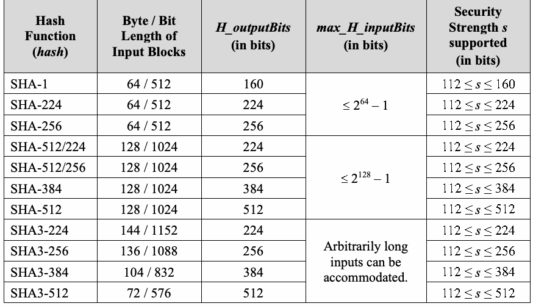
| ハッシュ関数（hash） | 入力ブロックのバイト長／ビット長 | H_outputBits（ビット単位） | max_H_inputBits（ビット単位） | 支援されるセキュリティ強度s（ビット単位） |
| SHA-1 | 64 / 512 | 160 | ≤ 2^64 − 1 | 112 ≤ s ≤ 160 |
| SHA-224 | 64 / 512 | 224 | 112 ≤ s ≤ 224 | |
| SHA-256 | 64 / 512 | 256 | 112 ≤ s ≤ 256 | |
| SHA-512/224 | 128 / 1024 | 224 | ≤ 2^128 − 1 | 112 ≤ s ≤ 224 |
| SHA-512/256 | 128 / 1024 | 256 | 112 ≤ s ≤ 256 | |
| SHA-384 | 128 / 1024 | 384 | 112 ≤ s ≤ 384 | |
| SHA-512 | 128 / 1024 | 512 | 112 ≤ s ≤ 512 | |
| SHA3-224 | 144 / 1152 | 224 | 任意長の入力を扱える。 | 112 ≤ s ≤ 224 |
| SHA3-256 | 136 / 1088 | 256 | 112 ≤ s ≤ 256 | |
| SHA3-384 | 104 / 832 | 384 | 112 ≤ s ≤ 384 | |
| SHA3-512 | 72 / 576 | 512 | 112 ≤ s ≤ 512 |
Table 2: H(x) = HMAC-hash(salt, x) (Option 2)
表2: H(x) = HMAC-hash(salt, x)（オプション2）
未レビュー訳| Hash Function (hash) | Effective Byte / Bit Length* of salt | H_outputBits (in bits) | max_H_inputBits (in bits) | Security Strength s supported (in bits) |
| SHA-1 | 64 / 512 | 160 | ≤ 2^64 − 513 | 112 ≤ s ≤ 160 |
| SHA-224 | 64 / 512 | 224 | 112 ≤ s ≤ 224 | |
| SHA-256 | 64 / 512 | 256 | 112 ≤ s ≤ 256 | |
| SHA-512/224 | 128 / 1024 | 224 | ≤ 2^128 − 1025 | 112 ≤ s ≤ 224 |
| SHA-512/256 | 128 / 1024 | 256 | 112 ≤ s ≤ 256 | |
| SHA-384 | 128 / 1024 | 384 | 112 ≤ s ≤ 384 | |
| SHA-512 | 128 / 1024 | 512 | 112 ≤ s ≤ 512 | |
| SHA3-224 | 144 / 1152 | 224 | Arbitrarily long | 112 ≤ s ≤ 224 |
原本PDFの抜粋画像
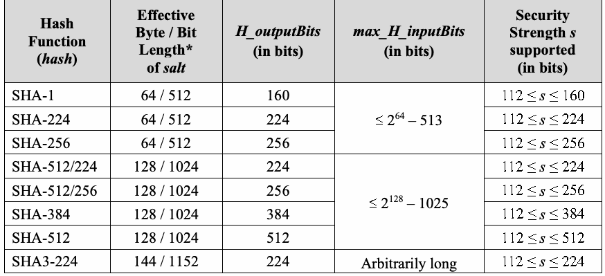
| ハッシュ関数（hash） | saltの有効バイト長／ビット長* | H_outputBits（ビット単位） | max_H_inputBits（ビット単位） | 支援されるセキュリティ強度s（ビット単位） |
| SHA-1 | 64 / 512 | 160 | ≤ 2^64 − 513 | 112 ≤ s ≤ 160 |
| SHA-224 | 64 / 512 | 224 | 112 ≤ s ≤ 224 | |
| SHA-256 | 64 / 512 | 256 | 112 ≤ s ≤ 256 | |
| SHA-512/224 | 128 / 1024 | 224 | ≤ 2^128 − 1025 | 112 ≤ s ≤ 224 |
| SHA-512/256 | 128 / 1024 | 256 | 112 ≤ s ≤ 256 | |
| SHA-384 | 128 / 1024 | 384 | 112 ≤ s ≤ 384 | |
| SHA-512 | 128 / 1024 | 512 | 112 ≤ s ≤ 512 | |
| SHA3-224 | 144 / 1152 | 224 | 任意長 | 112 ≤ s ≤ 224 |
| SHA3-256 | 136 / 1088 | 256 | inputs can be accommodated. | 112 ≤ s ≤ 256 |
| SHA3-384 | 104 / 832 | 384 | 112 ≤ s ≤ 384 | |
| SHA3-512 | 72 / 576 | 512 | 112 ≤ s ≤ 512 |
原本PDFの抜粋画像
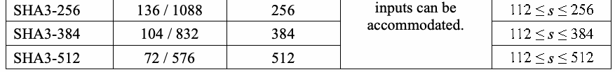
| SHA3-256 | 136 / 1088 | 256 | 任意長の入力を扱える。 | 112 ≤ s ≤ 256 |
| SHA3-384 | 104 / 832 | 384 | 112 ≤ s ≤ 384 | |
| SHA3-512 | 72 / 576 | 512 | 112 ≤ s ≤ 512 |
* This Recommendation places no restriction on the length of a chosen salt other than the requirement that its byte length be greater than zero but no greater than the length of a single input block to the hash function, hash, used to implement HMAC-hash. That freedom of choice is somewhat illusory, however, since the HMAC algorithm will convert an input salt value (as needed) into a string of the indicated hash-dependent length. A shorter salt (used by H as an HMAC key) will be padded by appending an all-zero bit string to obtain a string of the indicated length (the length of a single input block for the hash function, hash); a longer salt will be hashed to produce a shorter string (of bit length H_outputBits), which will then be padded (by appending an all-zero bit string) to obtain a string of the indicated length (see [FIPS 198] for additional information). Table 3: H(x) = KMAC#(salt, x, H_outputBits, “KDF”) (Option 3)
* 本推奨事項は、選択するsaltの長さについて、バイト長が0より大きく、HMAC-hashの実装に用いるハッシュ関数hashの単一入力ブロック長以下であること以外に制限を設けない。ただし、この選択の自由は見かけ上のものでもある。HMACアルゴリズムは、必要に応じて入力salt値を、hashに依存する指定長の文字列に変換するためである。短いsalt（HMAC鍵としてHが使用）は、指定長（hashの単一入力ブロック長）になるよう全ゼロのビット列を後ろに付加してパディングされる。長いsaltはハッシュされて短い文字列（H_outputBitsビット長）になり、その後、指定長になるよう全ゼロのビット列を後ろに付加してパディングされる（詳細は[FIPS 198]参照）。表3: H(x) = KMAC#(salt, x, H_outputBits, “KDF”)（オプション3）
未レビュー訳| KMAC Variant | Length | Suggested | H_outputBits (in bits) | max_H_inputBits (in bits) | Security Strength s supported (in bits) |
| of the | Maximum | ||||
| encoded | Byte Length | ||||
| salt value | of salt | ||||
| KMAC128 | Multiple of 168 bytes | 168 – 4 = 164 ** | Choice of 160, 224, 256, 384, 512, or L. | Arbitrarily long inputs can be accommodated. | 112 ≤ s ≤ 128 |
| KMAC256 | Multiple of 136 bytes | 136 – 4 = 132 *** | 112 ≤ s ≤ 256 |
原本PDFの抜粋画像
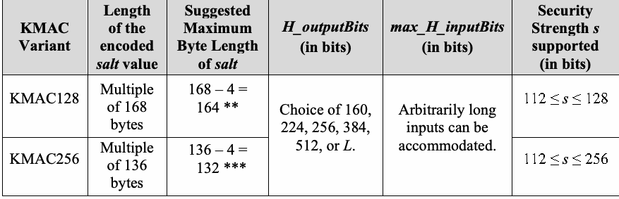
| KMAC変種 | salt値の符号化長 | saltの推奨最大バイト長 | H_outputBits（ビット単位） | max_H_inputBits（ビット単位） | 支援されるセキュリティ強度s（ビット単位） |
| KMAC128 | 168バイトの倍数 | 168 – 4 = 164 ** | 160、224、256、384、512またはLから選択。 | 任意長の入力を扱える。 | 112 ≤ s ≤ 128 |
| KMAC256 | 136バイトの倍数 | 136 – 4 = 132 *** | 112 ≤ s ≤ 256 |
** KMAC# prepends a length encoding for the first input data field. For KMAC128, using 164 bytes (or less) of salt leaves room for 4 bytes of prepended length encoding and limits the length of the encoded salt to no more than the length of a single block of input to KMAC128.
** KMAC#は第1入力データフィールドに長さ符号化を前置する。KMAC128でsaltを164バイト以下にすると、前置する長さ符号化の4バイト分を確保でき、符号化後のsalt長をKMAC128の単一入力ブロック長以下に制限できる。
未レビュー訳*** KMAC# prepends a length encoding for the first input data field. For KMAC256, using 132 bytes (or less) of salt leaves room for 4 bytes of prepended length encoding and limits the length of the encoded salt to no more than the length of a single block of input to KMAC256.
*** KMAC#は第1入力データフィールドに長さ符号化を前置する。KMAC256でsaltを132バイト以下にすると、前置する長さ符号化の4バイト分を確保でき、符号化後のsalt長をKMAC256の単一入力ブロック長以下に制限できる。
未レビュー訳5 Two-Step Key Derivation
5 2段階鍵導出
未レビュー訳This section specifies an approved (two-step) extraction-then-expansion key-derivation procedure. Like the one-step key-derivation functions described in Section 4, the input to this two-step procedure includes the shared secret Z; L, a positive integer indicating the desired length (in bits) of the output keying material; and other information (as determined by the particular implementation of the key-establishment scheme and/or key-derivation method). In contrast to the one-step methods, a salt value is required to be included as part of the input.
本節では、承認済みの（2段階）抽出後拡張型鍵導出手順を規定する。4節で説明した1段階鍵導出関数と同様、この2段階手順への入力には共有秘密Z、出力鍵素材の所望長（ビット単位）を示す正の整数L、およびその他の情報（鍵確立方式または鍵導出方法の特定実装により決定される）が含まれる。1段階方式と異なり、入力の一部としてsalt値を含める必要がある。
未レビュー訳The extraction-then-expansion key-derivation procedure is pictured in Figure 1.
抽出後拡張型鍵導出手順を図1に示す。
未レビュー訳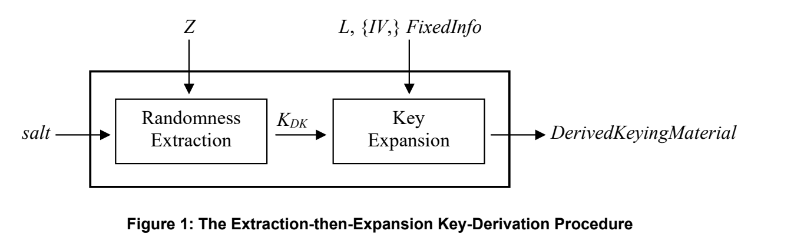
図1：抽出後拡張型鍵導出手順
The first (randomness-extraction) step uses either HMAC (as defined in [FIPS 198]) or AES-CMAC (as defined in [SP 800-38B]). In either case, there are two inputs: salt, which serves as a MAC key and the shared secret, Z, which serves as the “message.” The resulting MAC output is used as a key-derivation key, K_DK. The use of the K_DK shall be restricted to the execution of the key-expansion step of the (two step) key-derivation procedure in which the K_DK is extracted from Z. In particular, its value shall not be an output of the extraction-then-expansion key-derivation procedure.
第1段階（乱数抽出）では、[FIPS 198]に定義されるHMACまたは[SP 800-38B]に定義されるAES-CMACを使用する。いずれの場合も入力は2つである。MAC鍵として機能するsaltと、「メッセージ」として機能する共有秘密Zである。生成されたMAC出力を鍵導出鍵K_DKとして用いる。K_DKの使用は、ZからK_DKを抽出する2段階鍵導出手順の鍵拡張段階に限定しなければならない。特に、その値を抽出後拡張型鍵導出手順の出力としてはならない。
未レビュー訳The second (key-expansion) step uses the key-derivation key, K_DK, along with the integer L and other appropriate data as the input to a PRF-based key-derivation function specified in [SP 800-108]. The output returned by that key-derivation function is either secret keying material (in the form of DerivedKeyingMaterial, a bit string of length L) or an error indicator.
第2段階（鍵拡張）では、鍵導出鍵K_DK、整数Lおよびその他の適切なデータを、[SP 800-108]に規定されたPRFベースの鍵導出関数の入力として用いる。その関数の出力は、秘密鍵素材（長さLのビット列DerivedKeyingMaterial）またはエラー指示子のいずれかである。
未レビュー訳5.1 Specification of Key-Derivation Procedure
5.1 鍵導出手順の仕様
未レビュー訳The extraction-then-expansion key-derivation procedure is specified as follows: Function call: KDM( Z, OtherInput).
抽出後拡張型鍵導出手順を次のように規定する。関数呼び出し: KDM(Z, OtherInput)。
未レビュー訳Options for the Auxiliary MAC Algorithm: The MAC algorithm employed for randomness extraction shall be either an implementation of HMAC as defined in [FIPS 198], based on an approved hash function, hash (i.e., HMAC-hash), or an implementation of AES-CMAC as defined in [SP 800-38B] (i.e., AES-N-CMAC for N = 128, 192, or 256). In either case, the (untruncated) output of the MAC algorithm is used as the key-derivation key for subsequent key expansion. Tables 4 and 5 in Section 5.2 describe the possibilities for the auxiliary MAC algorithm, which shall be chosen in accordance with the selection requirements specified in Section 7.
補助MACアルゴリズムのオプション: 乱数抽出に用いるMACアルゴリズムは、承認済みハッシュ関数hashに基づく[FIPS 198]定義のHMAC実装（HMAC-hash）、または[SP 800-38B]定義のAES-CMAC実装（N = 128、192または256のAES-N-CMAC）のいずれかでなければならない。いずれの場合も、そのMACアルゴリズムの（切り詰めていない）出力を後続の鍵拡張用の鍵導出鍵として用いる。5.2節の表4および表5に補助MACアルゴリズムの選択肢を示す。アルゴリズムは7節の選択要件に従って選ばなければならない。
未レビュー訳Implementation-Dependent Auxiliary PRF-based KDF: One of the general-purpose, PRF-based key-derivation functions defined in [SP 800-108] shall be used for key expansion. These key-derivation functions employ an approved MAC algorithm as the PRF. In this Recommendation, the PRF used by the KDF in key expansion is determined by the MAC algorithm that is used for randomness extraction. Specifically:
実装依存の補助PRFベースKDF: 鍵拡張には、[SP 800-108]で定義される汎用PRFベース鍵導出関数のいずれかを使用しなければならない。これらの鍵導出関数は、承認済みMACアルゴリズムをPRFとして用いる。本推奨事項では、鍵拡張でKDFが用いるPRFは乱数抽出に用いるMACアルゴリズムによって決まる。具体的には:
未レビュー訳a. If HMAC-hash is used in the randomness-extraction step, then the same HMAC-hash (i.e., using the same hash function, hash) shall be used as the PRF in the key-expansion step; and
a. 乱数抽出段階でHMAC-hashを使用する場合、同じHMAC-hash（すなわち同じハッシュ関数hashを使用するもの）を鍵拡張段階のPRFとして使用しなければならない。
未レビュー訳b. If AES-128-CMAC, AES-192-CMAC, or AES-256-CMAC is used in the randomness-extraction step, then only AES-128-CMAC (i.e., the CMAC mode of AES-128) shall be used as the PRF in the key-expansion step.
b. 乱数抽出段階でAES-128-CMAC、AES-192-CMACまたはAES-256-CMACを使用する場合、鍵拡張段階のPRFにはAES-128-CMAC（AES-128のCMACモード）のみを使用しなければならない。
未レビュー訳The rationale for these rules is discussed in Section 8.3.
これらの規則の根拠は8.3節で説明する。
未レビュー訳Input:
入力:
未レビュー訳1.Z – A byte string that represents the shared secret. It is used as the “message” during the execution of the MAC algorithm employed in the randomness-extraction step.
1.Z – 共有秘密を表すバイト列。乱数抽出段階でMACアルゴリズムを実行する際の「メッセージ」として用いる。
未レビュー訳2.OtherInput, which includes:
2.OtherInput。次を含む:
未レビュー訳a. salt – A non-null (secret or non-secret) byte string used as the MAC key during the execution of the randomness-extraction step (i.e., step 1 in the process shown below). This salt could be, for example, a value computed from nonces exchanged as part of a key-establishment protocol that employs one or more of the key-agreement schemes specified in [SP 800-56A] or [SP 800-56B], a value already shared by the protocol participants, or a value that is pre-determined by the protocol. The possibilities for the length of salt are determined by the auxiliary MAC algorithm that is used for randomness extraction:
a. salt – 乱数抽出段階（以下の処理のステップ1）でMAC鍵として使用する、非ヌルの（秘密または非秘密の）バイト列。例えば、[SP 800-56A]または[SP 800-56B]で規定される鍵合意方式を1つ以上用いる鍵確立プロトコルで交換したノンスから計算した値、プロトコル参加者がすでに共有している値、またはプロトコルで事前に決められた値を使用できる。saltの長さの選択肢は、乱数抽出に用いる補助MACアルゴリズムで決まる。
未レビュー訳(1) The HMAC-hash algorithm as defined in [FIPS 198] can accommodate keys of any length up to the maximum bit length permitted for input to the hash function, hash. Therefore, the length of the byte string salt can be as large as allowed for any string used as input to hash. However, if the bit length of salt is greater than the bit length specified for a single input block for hash, then the value of salt is replaced by hash(salt) as part of the HMAC computation. (Input-block lengths for the approved hash functions that can be employed to implement HMAC-hash are included in column 4 of Table 1 in Section 4.2; also see Table 4 of Section 5.2.) In the absence of an agreed-upon alternative, the input salt value shall be an all-zero byte string whose length is equal to that of a single input block for the hash function, hash.
(1) [FIPS 198]に定義されるHMAC-hashアルゴリズムは、ハッシュ関数hashへの入力として許される最大ビット長までの任意長の鍵を扱える。したがってsaltのバイト列長は、hashへの入力として許される最大長まで可能である。ただしsaltのビット長がhashの単一入力ブロック長を超える場合、HMAC計算の一部としてsalt値はhash(salt)に置き換えられる。（HMAC-hashの実装に用いる承認済みハッシュ関数の入力ブロック長は4.2節の表1の列4に記載。また5.2節の表4参照。）別途合意された方法がない限り、入力salt値はhashの単一入力ブロックと同じ長さの全ゼロのバイト列でなければならない。
未レビュー訳(2) AES-N-CMAC requires keys that are N bits long (for N = 128, 192, or 256), depending upon the AES variant that is used in the implementation. The bit length of salt shall be the bit length required of a key for that AES variant (128 bits for AES-128, 192 bits for AES-192, or 256 bits for AES-256). In the absence of an agreed-upon alternative, the input salt value shall be an all-zero string of the required bit length.
(2) AES-N-CMACでは、実装に用いるAES変種に応じてNビット（N = 128、192または256）の鍵が必要である。saltのビット長は、そのAES変種に必要な鍵長でなければならない（AES-128では128ビット、AES-192では192ビット、AES-256では256ビット）。別途合意された方法がない限り、入力salt値は必要なビット長の全ゼロ列でなければならない。
未レビュー訳b. L – A positive integer that indicates the length (in bits) of the secret keying material to be derived using the auxiliary PRF-based KDF during the execution of the key-expansion step (i.e., step 2 in the process shown below). The maximum value allowed for L is determined by the mode (i.e., Counter Mode, Feedback Mode, or Double-Pipeline Iteration Mode) and implementation details of the chosen KDF (as specified in [SP 800-108]). An error event will occur during the execution of the KDF if L is too large.13 (Note that L = keydatalen in the notation of previous versions of [SP 800-56A], while L = KBits in the notation of previous versions of [SP 800-56B]; current versions of those documents have been updated to be consistent with SP 800-56C.)
b. L – 鍵拡張段階（以下の処理のステップ2）で補助PRFベースKDFを用いて導出する秘密鍵素材の長さ（ビット単位）を示す正の整数。Lの最大許容値は、選択したKDFのモード（カウンターモード、フィードバックモード、または二重パイプライン反復モード）および実装の詳細で決まる（[SP 800-108]参照）。Lが大きすぎるとKDFの実行中にエラーが発生する。13（旧版[SP 800-56A]の表記ではL = keydatalen、旧版[SP 800-56B]ではL = KBitsであった。各文書の現行版はSP 800-56Cと整合するよう更新済み。）
未レビュー訳c. {IV} – A bit string included (if required) for use as an initial value during an execution of the auxiliary PRF-based KDF; an IV shall be included in OtherInput if and only if the chosen PRF-based KDF is operating in Feedback Mode. It can either be secret or non-secret. It may be an empty string. If the PRF-based KDF is operating in either Counter Mode or Double-Pipeline Iteration Mode, an IV shall not be included in OtherInput. (See [SP 800-108] for details.)
c. {IV} – 補助PRFベースKDFの実行中に初期値として使用する（必要な場合に含める）ビット列。選択したPRFベースKDFがフィードバックモードで動作する場合に限り、IVをOtherInputに含めなければならない。IVは秘密でも非秘密でもよく、空列でもよい。PRFベースKDFがカウンターモードまたは二重パイプライン反復モードで動作する場合、IVをOtherInputに含めてはならない（詳細は[SP 800-108]参照）。
未レビュー訳d. FixedInfo, including:
d. 次を含むFixedInfo:
未レビュー訳(1) Label – A bit string that identifies the purpose for the derived keying material. For example, it can be the ASCII encoding of a character string describing the relying application(s) and/or the intended use(s) of the keying material. The value and encoding method used for the Label are defined in a larger context, for example, in the protocol that uses this key-derivation procedure. As an alternative to including this string as a separate component of FixedInfo, Label could be incorporated in Context (see below).
(1) Label – 導出鍵素材の目的を識別するビット列。例えば、依存するアプリケーションおよび／または鍵素材の意図した用途を記述する文字列のASCII符号化を使用できる。Labelの値と符号化方法は、鍵導出手順を使用するプロトコルなど、より大きな文脈で定義する。別個のFixedInfo構成要素として含める代わりに、LabelをContext（下記参照）に組み込んでもよい。
未レビュー訳(2) Context – A bit string of context-specific data appropriate for the relying key-establishment scheme/protocol and the chosen PRF-based KDF. For recommendations concerning the format and context-specific content of Context, see the specifications of FixedInfo and/or OtherInfo in [SP 800-56A] and/or [SP 800-56B], respectively.
(2) Context – 依存する鍵確立方式／プロトコルおよび選択したPRFベースKDFに適した、コンテキスト固有データのビット列。Contextの形式およびコンテキスト固有の内容に関する推奨事項は、[SP 800-56A]および／または[SP 800-56B]におけるFixedInfoおよび／またはOtherInfoの仕様を参照。
未レビュー訳(3) [L]_2 – An agreed-upon encoding of L as a bit string that is appropriate for use by the chosen PRF-based KDF (see [SP 800-108] for details). As an alternative to including this string as a separate component of FixedInfo, [L] could be incorporated in Context (see 2 above).
(3) [L]_2 – 選択したPRFベースKDFでの使用に適した、Lのビット列としての合意済み符号化（詳細は[SP 800-108]参照）。別個のFixedInfo構成要素として含める代わりに、[L]_2をContext（上記2参照）に組み込んでもよい。
未レビュー訳Process:
処理:
未レビュー訳[Randomness Extraction]
[乱数抽出]
未レビュー訳1.Call MAC(salt, Z, …) to obtain K_DK or an error indicator. If an error occurs, output an error indicator, and exit from this process without performing step 2.
1.MAC(salt, Z, …)を呼び出してK_DKまたはエラー表示を得る。エラーが発生した場合はエラー表示を出力し、ステップ2を実行せずに処理を終了する。
未レビュー訳[Key Expansion]
[鍵拡張]
未レビュー訳2.Call KDF(K_DK, L, {IV,} FixedInfo) to obtain DerivedKeyingMaterial or an error indicator (see [SP 800-108] for details). If an error occurs, output an error indicator; otherwise output DerivedKeyingMaterial.
2.KDF(K_DK, L, {IV,} FixedInfo)を呼び出してDerivedKeyingMaterialまたはエラー表示を得る（詳細は[SP 800-108]参照）。エラーが発生した場合はエラー表示を出力し、そうでなければDerivedKeyingMaterialを出力する。
未レビュー訳Output:
出力:
未レビュー訳The bit string DerivedKeyingMaterial of length L bits (or an error indicator).
長さLビットのビット列DerivedKeyingMaterial（またはエラー表示）。
未レビュー訳Notes: When HMAC-hash is used as the auxiliary MAC algorithm, the length of K_DK is the length of an untruncated output block from the hash function, hash. When AES-CMAC is used, then (regardless of the AES variant employed) K_DK is a 128-bit binary string. K_DK is used (locally) as a key-derivation key by the auxiliary KDF during the key-expansion step and shall be destroyed (along with all other sensitive, locally stored data) after its use. Its value shall not be an output of the key-derivation procedure.
注: HMAC-hashを補助MACアルゴリズムとして使用する場合、K_DKの長さはハッシュ関数hashの切り詰めていない出力ブロックの長さである。AES-CMACを使用する場合、用いるAES変種にかかわらず、K_DKは128ビットの2進文字列である。K_DKは鍵拡張段階で補助KDFの鍵導出鍵として（ローカルで）使用し、使用後は（ローカルに保存された他のすべての機密データとともに）破棄しなければならない。その値を鍵導出手順の出力としてはならない。
未レビュー訳[RFC 5869] specifies a version of the above extraction-then-expansion key-derivation procedure using HMAC for both the extraction and expansion steps. For an extensive discussion concerning the rationale for the extract-and-expand mechanisms specified in this Recommendation, see [LNCS 6223].
[RFC 5869]は、抽出段階と拡張段階の両方でHMACを用いる、上記の抽出後拡張型鍵導出手順の一方式を規定する。本推奨事項で規定する抽出・拡張メカニズムの根拠に関する詳しい議論は[LNCS 6223]を参照。
未レビュー訳5.2 The Auxiliary MAC Algorithm and Related Parameters
5.2 補助MACアルゴリズムおよび関連パラメーター
未レビュー訳Tables 4 and 5 enumerate the possibilities for the auxiliary MAC algorithm used for randomness extraction and provide additional information concerning the lengths of the MAC key (i.e., the salt value) and the extracted key-derivation key (i.e., K_DK). The tables also indicate the range of security strengths that can be supported by each choice for MAC (see Section 5.1) when used for two-step key derivation in a key-establishment scheme specified in SP 800-56A and SP 800-56B.
表4および表5は、乱数抽出に用いる補助MACアルゴリズムの選択肢を列挙し、MAC鍵（すなわちsalt値）および抽出された鍵導出鍵K_DKの長さに関する情報を示す。また、[SP 800-56A]または[SP 800-56B]に規定される鍵確立方式で2段階鍵導出を行う際に、MACの各選択肢（5.1節参照）が支援できるセキュリティ強度の範囲も示す。
未レビュー訳Table 4: MAC( salt, Z, …) = HMAC-hash( salt, Z ) (For Randomness Extraction)
表4: MAC(salt, Z, …) = HMAC-hash(salt, Z)（乱数抽出用）
未レビュー訳| Hash Function (hash) | Effective Byte / Bit Length* of salt | Bit Length of Extracted K DK | Security Strength s supported (in bits) |
| SHA-1 | 64 / 512 | 160 | 112 ≤ s ≤ 160 |
| SHA-224 | 64 / 512 | 224 | 112 ≤ s ≤ 224 |
| SHA-256 | 64 / 512 | 256 | 112 ≤ s ≤ 256 |
原本PDFの抜粋画像
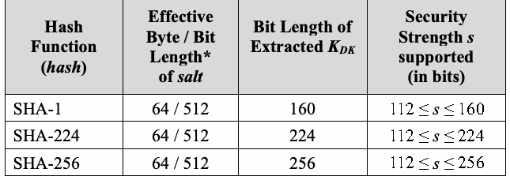
| ハッシュ関数（hash） | saltの有効バイト長／ビット長* | 抽出されたK_DKのビット長 | 支援されるセキュリティ強度s（ビット単位） |
| SHA-1 | 64 / 512 | 160 | 112 ≤ s ≤ 160 |
| SHA-224 | 64 / 512 | 224 | 112 ≤ s ≤ 224 |
| SHA-256 | 64 / 512 | 256 | 112 ≤ s ≤ 256 |
| SHA-512/224 | 128 / 1024 | 224 | 112 ≤ s ≤ 224 |
| SHA-512/256 | 128 / 1024 | 256 | 112 ≤ s ≤ 256 |
| SHA-384 | 128 / 1024 | 384 | 112 ≤ s ≤ 384 |
| SHA-512 | 128 / 1024 | 512 | 112 ≤ s ≤ 512 |
| SHA3-224 | 144 / 1152 | 224 | 112 ≤ s ≤ 224 |
| SHA3-256 | 136 / 1088 | 256 | 112 ≤ s ≤ 256 |
| SHA3-384 | 104 / 832 | 384 | 112 ≤ s ≤ 384 |
| SHA3-512 | 72 / 576 | 512 | 112 ≤ s ≤ 512 |
原本PDFの抜粋画像
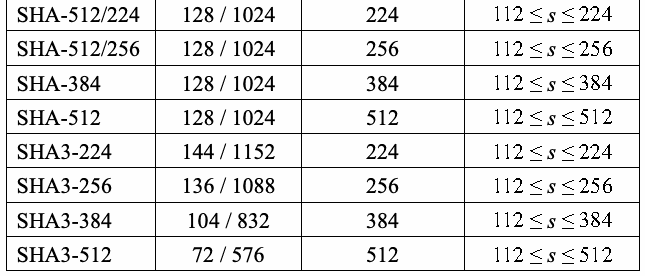
| SHA-512/224 | 128 / 1024 | 224 | 112 ≤ s ≤ 224 |
| SHA-512/256 | 128 / 1024 | 256 | 112 ≤ s ≤ 256 |
| SHA-384 | 128 / 1024 | 384 | 112 ≤ s ≤ 384 |
| SHA-512 | 128 / 1024 | 512 | 112 ≤ s ≤ 512 |
| SHA3-224 | 144 / 1152 | 224 | 112 ≤ s ≤ 224 |
| SHA3-256 | 136 / 1088 | 256 | 112 ≤ s ≤ 256 |
| SHA3-384 | 104 / 832 | 384 | 112 ≤ s ≤ 384 |
| SHA3-512 | 72 / 576 | 512 | 112 ≤ s ≤ 512 |
* This Recommendation places no restriction on the length of a chosen salt other than the requirement that its byte length be greater than zero but no greater than the length of a single input block to the hash function, hash, used to implement HMAC-hash. That freedom of choice is somewhat illusory, however, since the HMAC algorithm will convert an input salt value (as needed) into a string of the indicated hash-dependent length. A shorter salt (which is used as an HMAC key) will be padded (by appending an all-zero bit string) to obtain a string of the indicated length (the length of a single input block for the hash function, hash); a longer salt will be hashed to produce a shorter string, which will then be padded (by appending an all-zero bit string) to obtain a string of the indicated length. (See [FIPS 198] for additional information.)
* 本推奨事項は、選択するsaltの長さについて、バイト長が0より大きく、HMAC-hashの実装に用いるハッシュ関数hashの単一入力ブロック長以下であること以外に制限を設けない。ただし、この選択の自由は見かけ上のものでもある。HMACアルゴリズムは必要に応じて入力salt値を、hashに依存する指定長の文字列に変換するためである。短いsalt（HMAC鍵として用いる）は、指定長（hashの単一入力ブロック長）になるよう全ゼロのビット列を後ろに付加してパディングされる。長いsaltはハッシュされて短い文字列になり、その後、指定長になるよう全ゼロのビット列を後ろに付加してパディングされる（詳細は[FIPS 198]参照）。
未レビュー訳Note: The hash function, hash, used by the HMAC algorithm employed during randomness extraction shall be used again in the subsequent key-expansion step to implement the HMAC algorithm that is employed as a PRF by the auxiliary PRF-based KDF.
注: 乱数抽出で用いるHMACアルゴリズムのハッシュ関数hashは、後続の鍵拡張段階で補助PRFベースKDFがPRFとして用いるHMACアルゴリズムにも再度使用しなければならない。
未レビュー訳Table 5: MAC( salt, Z, …) = AES-N-CMAC( salt, Z ) (For Randomness Extraction)
表5: MAC(salt, Z, …) = AES-N-CMAC(salt, Z)（乱数抽出用）
未レビュー訳| AES Variant used by AES-CMAC | Bit Length of salt for AES-CMAC | Bit Length of Extracted K DK | Security Strength s supported (in bits) |
| AES-128 | 128 | 128 | 112 ≤ s ≤ 128 |
| AES-192 | 192 | ||
| AES-256 | 256 |
原本PDFの抜粋画像
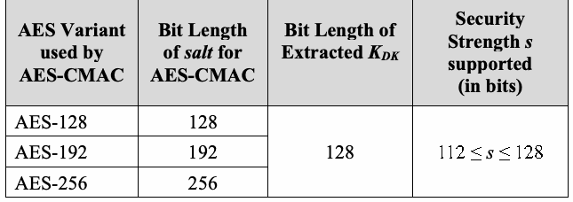
| AES-CMACで使用するAES変種 | AES-CMAC用saltのビット長 | 抽出されたK_DKのビット長 | 支援されるセキュリティ強度s（ビット単位） |
| AES-128 | 128 | 128 | 112 ≤ s ≤ 128 |
| AES-192 | 192 | ||
| AES-256 | 256 |
Note: Regardless of which AES variant is used by the AES-CMAC algorithm during randomness-extraction, the 128-bit AES block size determines the bit length of the resulting K_DK and the maximum security strength that can be supported by the use of the derived keying material (i.e., no more than 128 bits). To accommodate the use of this 128-bit K_DK as a key-derivation key, the CMAC mode of AES-128 shall be the PRF employed by the auxiliary PRF-based KDF in the subsequent key-expansion step.
注: 乱数抽出でAES-CMACアルゴリズムがどのAES変種を使うかにかかわらず、AESの128ビットブロック長により、生成されるK_DKのビット長と、導出鍵素材の使用で支援できる最大セキュリティ強度（128ビット以下）が決まる。この128ビットのK_DKを鍵導出鍵として使用できるよう、後続の鍵拡張段階では補助PRFベースKDFのPRFとしてAES-128のCMACモードを用いなければならない。
未レビュー訳5.3 Randomness Extraction followed by Multiple Key Expansions
5.3 乱数抽出とそれに続く複数の鍵拡張
未レビュー訳The two-step key-derivation procedure specified in Section 5.1 can be generalized to incorporate a single instance of randomness extraction followed by m instances of key expansion for some (implementation-dependent) integer m ≥ 2.
5.1節で規定する2段階鍵導出手順は、1回の乱数抽出に続いてm回の鍵拡張を行うよう一般化できる。mは実装依存の整数で、m ≥ 2である。
未レビュー訳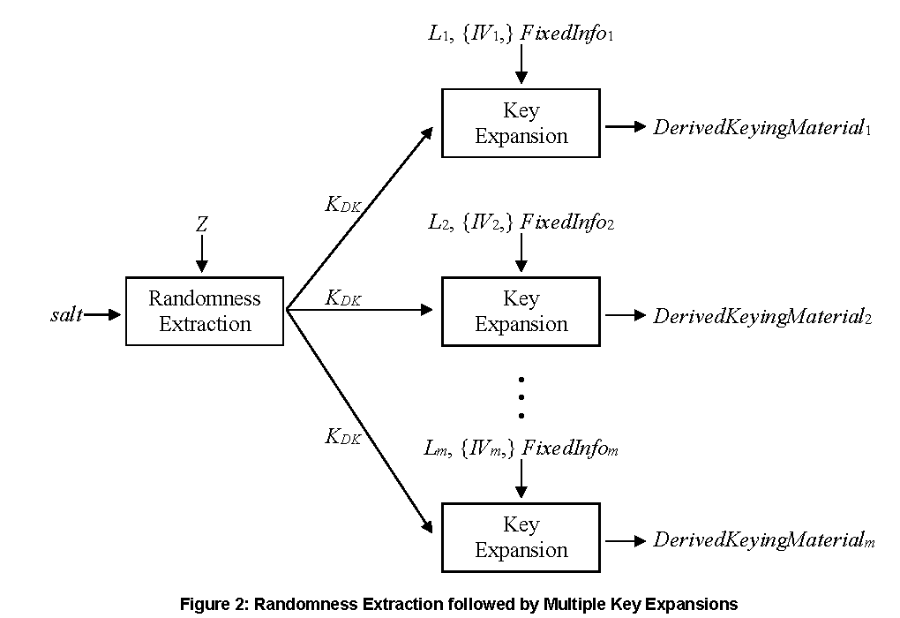
図2：乱数抽出後に複数回の鍵拡張を行う手順
For conformance with this Recommendation, the following restrictions apply:
本推奨事項への適合のため、次の制限を適用する。
未レビュー訳•The auxiliary MAC algorithm employed for randomness extraction shall be either an implementation of HMAC as defined in [FIPS 198], based on an approved hash function, hash (i.e., HMAC-hash), or an implementation of AES-CMAC as defined in [SP 800-38B] (i.e., AES-N-CMAC for N = 128, 192, or 256). In either case, the (untruncated) output of the MAC algorithm shall be used as the key-derivation key for subsequent key expansion. Tables 4 and 5 in Section 5.2 describe the possibilities for the auxiliary MAC algorithm, which shall be chosen in accordance with the selection requirements specified in Section 7.
•乱数抽出に用いる補助MACアルゴリズムは、承認済みハッシュ関数hashに基づく[FIPS 198]定義のHMAC実装（HMAC-hash）、または[SP 800-38B]定義のAES-CMAC実装（N = 128、192または256のAES-N-CMAC）のいずれかでなければならない。いずれの場合も、後続の鍵拡張用鍵導出鍵としてMACアルゴリズムの（切り詰めていない）出力を使用しなければならない。5.2節の表4および表5に補助MACアルゴリズムの選択肢を示す。アルゴリズムは7節の選択要件に従って選ばなければならない。
未レビュー訳•One of the general-purpose, PRF-based key-derivation functions defined in [SP 800-108] shall be used for key expansion. The same KDF shall be used to implement all m expansion operations. In particular, the same key-derivation mode (counter mode, feedback mode, or double-pipeline iteration mode) and the same PRF shall be employed by the KDF in each of the m key-expansion operations.
•鍵拡張には、[SP 800-108]で定義される汎用PRFベース鍵導出関数のいずれかを使用しなければならない。m回すべての拡張操作に同じKDFを使用しなければならない。具体的には、m回の鍵拡張操作のそれぞれで、KDFに同じ鍵導出モード（カウンターモード、フィードバックモード、または二重パイプライン反復モード）および同じPRFを使用しなければならない。
未レビュー訳•The PRF used by the KDF in key expansion is determined by the MAC algorithm that is used for randomness extraction. Specifically:
•鍵拡張でKDFが用いるPRFは、乱数抽出に用いるMACアルゴリズムによって決まる。具体的には:
未レビュー訳a. If HMAC-hash is used for randomness extraction, then the same HMAC-hash (i.e., using the same hash function, hash) shall be the PRF used by the KDF in key expansion. and b. If either AES-128-CMAC, AES-192-CMAC, or AES-256-CMAC is used for randomness extraction, then the PRF used by the KDF in key-expansion shall be AES-128-CMAC (i.e., the CMAC mode of AES-128).
a. 乱数抽出にHMAC-hashを使用する場合、同じHMAC-hash（同じハッシュ関数hashを用いるもの）を鍵拡張でKDFが用いるPRFとしなければならない。b. 乱数抽出にAES-128-CMAC、AES-192-CMACまたはAES-256-CMACを使用する場合、鍵拡張でKDFが用いるPRFはAES-128-CMAC（AES-128のCMACモード）でなければならない。
未レビュー訳•The OtherInput provided during the key-derivation request shall provide the salt for the randomness-extraction step (see Section 5.1 for additional details), and the requisite inputs (other than the key-derivation key) for m calls to the PRF-based KDF used for key expansion. In particular, for i = 1, .., m, OtherInput shall include (subject to the stated conditions):
•鍵導出要求で提供するOtherInputには、乱数抽出段階用のsalt（詳細は5.1節参照）と、鍵導出鍵以外で、鍵拡張に用いるPRFベースKDFをm回呼び出すために必要な入力を含めなければならない。特にi = 1, …, mについて、OtherInputは（記載条件に従って）次を含めなければならない。
未レビュー訳a. L_i – A positive integer that indicates the length (in bits) of the secret keying material to be derived during the i-th call to the PRF-based KDF. (See the description of L in Section 5.1 for additional details.)
a. L_i – PRFベースKDFのi回目の呼び出しで導出する秘密鍵素材の長さ（ビット単位）を示す正の整数（詳細は5.1節のLの説明を参照）。
未レビュー訳b. {IV_i} – A bit string included (if required) for use as an initial value for the i-th call to the PRF-based KDF; the IV_i values shall be included in OtherInput if and only if the chosen PRF-based KDF is operating in Feedback Mode. (See the description of IV in Section 5.1 for additional details.)
b. {IV_i} – PRFベースKDFのi回目の呼び出しで初期値として用いるため（必要な場合に）含めるビット列。選択したPRFベースKDFがフィードバックモードで動作する場合に限り、IV_i値をOtherInputに含めなければならない（詳細は5.1節のIVの説明を参照）。
未レビュー訳c. FixedInfo_i – The FixedInfo data to be employed during the i-th call to the PRF-based KDF. (See the description of FixedInfo in Section 5.1 for details.)
c. FixedInfo_i – PRFベースKDFのi回目の呼び出しで用いるFixedInfoデータ（詳細は5.1節のFixedInfoの説明を参照）。
未レビュー訳•The values of FixedInfo_1, FixedInfo_2, …, and FixedInfo_m shall be (pairwise) distinct. (See Section 7.5, item 2 in [SP 800-108].)
•FixedInfo_1、FixedInfo_2、…、FixedInfo_mの値は、（各組が）互いに異ならなければならない（[SP 800-108]の7.5節、項目2参照）。
未レビュー訳•The derived keying material, DerivedKeyingMaterial_1, DerivedKeyingMaterial_2, …, and DerivedKeyingMaterial_m shall not be output until all m bit strings have been successfully computed. If an error occurs during randomness extraction or key expansion, then this key-derivation method shall not output any derived keying material.
•DerivedKeyingMaterial_1、DerivedKeyingMaterial_2、…、DerivedKeyingMaterial_mからなる導出鍵素材は、m個すべてのビット列の計算が成功するまで出力してはならない。乱数抽出または鍵拡張中にエラーが発生した場合、この鍵導出方法はいかなる導出鍵素材も出力してはならない。
未レビュー訳To incorporate m key-expansion operations into an extract-then-expand key-derivation procedure, the process and output specified in Section 5.1 are modified as follows:
m回の鍵拡張操作を抽出後拡張型鍵導出手順に組み込むには、5.1節で規定した処理と出力を次のように変更する。
未レビュー訳Process: [Randomness Extraction]
処理: [乱数抽出]
未レビュー訳1.Call MAC( salt, Z, …) to obtain K or an error indicator; if an error occurs, output an DK error indicator and exit from this process without performing steps 2 and 3.
1.MAC(salt, Z, …)を呼び出してK_DKまたはエラー表示を得る。エラーが発生した場合はエラー表示を出力し、ステップ2および3を実行せずに処理を終了する。
未レビュー訳[Key Expansion]
[鍵拡張]
未レビュー訳2.For i = 1 to m, do the following:
2.i = 1からmまで、次を実行する。
未レビュー訳2.1 Call KDF(K_DK, L_i, {IV_i,} FixedInfo_i) to obtain DerivedKeyingMaterial_i or an error indicator (see [SP 800-108] for details). If an error occurs, output an error indicator and exit this process without performing any of the remaining actions (in particular, omit step 3).
2.1 KDF(K_DK, L_i, {IV_i,} FixedInfo_i)を呼び出し、DerivedKeyingMaterial_iまたはエラー指示子を得る（詳細は[SP 800-108]参照）。エラーが発生した場合はエラー指示子を出力してこの処理を終了し、残りの操作（特にステップ3）を実行しない。
未レビュー訳3.For i = 1 to m, do the following:
3.i = 1からmまで、次を実行する。
未レビュー訳3.1 Output DerivedKeyingMaterial_i.
3.1 DerivedKeyingMaterial_iを出力する。
未レビュー訳Output:
出力:
未レビュー訳The bit strings DerivedKeyingMaterial_1, DerivedKeyingMaterial_2, …, and DerivedKeyingMaterial_m of lengths L_1 bits, L_2 bits, …, and L_m bits, respectively (or an error indicator).
長さがそれぞれL_1、L_2、…、L_mビットであるビット列DerivedKeyingMaterial_1、DerivedKeyingMaterial_2、…、DerivedKeyingMaterial_m（またはエラー指示子）。
未レビュー訳Notes: As specified in Section 5.1: When HMAC-hash is used as the auxiliary MAC algorithm, the length of K_DK is the length of an untruncated output block from the hash function, hash. When AES-CMAC is used, then (regardless of the AES variant employed) K_DK is a 128-bit binary string. The extracted K_DK is used (locally) as a key-derivation key by the auxiliary KDF during key expansion (step 2 above) and shall be destroyed (along with all other sensitive, locally stored data) after its use. Its value shall not be an output of the key-derivation procedure.
注: 5.1節の規定のとおり、HMAC-hashを補助MACアルゴリズムとして使用する場合、K_DKの長さはハッシュ関数hashの切り詰めていない出力ブロック長である。AES-CMACを使用する場合、AES変種にかかわらずK_DKは128ビットの2進文字列である。抽出したK_DKは、鍵拡張（上記ステップ2）中に補助KDFの鍵導出鍵として（ローカルで）使用し、使用後は（ローカルに保存された他のすべての機密データとともに）破棄しなければならない。その値を鍵導出手順の出力としてはならない。
未レビュー訳6 Application-Specific Key-Derivation Methods
6 アプリケーション固有の鍵導出方法
未レビュー訳Additional approved, application-specific key-derivation methods are enumerated in [SP 800-135]. Unless an explicit exception is made in [SP 800-135], any hash function or MAC algorithm employed by the key-derivation methods enumerated in [SP 800-135] shall be approved and shall also meet the selection requirements specified in this Recommendation (i.e., SP 800-56C).
追加の承認済みアプリケーション固有鍵導出方法を[SP 800-135]に列挙する。[SP 800-135]で明示的な例外が定められていない限り、同規格に列挙される鍵導出方法が用いるハッシュ関数またはMACアルゴリズムは承認済みであり、かつ本推奨事項（すなわちSP 800-56C）の選択要件を満たさなければならない。
未レビュー訳7 Selecting Hash Functions and MAC Algorithms
7 ハッシュ関数およびMACアルゴリズムの選択
未レビュー訳The key-derivation methods specified in this Recommendation, as well as those enumerated in [SP 800-135], use hash functions and/or message authentication code (MAC) algorithms as auxiliary functions. In particular:
本推奨事項で規定する鍵導出方法および[SP 800-135]に列挙する鍵導出方法は、補助関数としてハッシュ関数および／またはメッセージ認証コード（MAC）アルゴリズムを使用する。特に:
未レビュー訳•The one-step key-derivation functions that are specified in Section 4.1 of this Recommendation employ an appropriate choice of hash function (hash), an HMAC algorithm based on an appropriate choice of hash function (HMAC-hash), or one of two KMAC variants (KMAC128 or KMAC256) to implement the auxiliary function H.
•表4および表5は、乱数抽出に用いる補助MACアルゴリズムの選択肢を列挙し、MAC鍵（すなわちsalt値）および抽出された鍵導出鍵K
未レビュー訳•The extraction-then-expansion key-derivation procedure specified in Section 5.1 employs either an HMAC algorithm based on an appropriate choice of hash function (HMAC-hash) for both randomness extraction and key expansion or an appropriate variant of the AES-CMAC algorithm (i.e., AES-N-CMAC for N = 128, 192, or 256) for randomness extraction together with AES-128-CMAC for key expansion.
•DK
未レビュー訳Unless explicitly stated to the contrary (e.g., in [SP 800-135]), the following requirements apply to the hash functions and MAC algorithms employed for key derivation:
が支援できるセキュリティ強度の範囲も示す（5.1節参照）。これは、[SP 800-56A]または[SP 800-56B]に規定される鍵確立方式で2段階鍵導出を行う際の各MACの選択肢に関するものである。
未レビュー訳•Whenever a hash function is employed (including as the primitive used by HMAC), an approved hash function shall be used. [FIPS 180] and [FIPS 202] specify approved hash functions.
•ハッシュ関数を用いる場合（HMACが使用するプリミティブとして用いる場合を含む）、承認済みハッシュ関数を使用しなければならない。[FIPS 180]および[FIPS 202]は承認済みハッシュ関数を規定する。
未レビュー訳•Whenever an HMAC algorithm is employed, the HMAC implementation shall conform to the specifications found in [FIPS 198].
•HMACアルゴリズムを用いる場合、その実装は[FIPS 198]の仕様に適合しなければならない。
未レビュー訳•Whenever a KMAC variant (KMAC128 or KMAC256) is employed, the KMAC implementation shall conform to the specifications found in [SP 800-185].
•KMAC変種（KMAC128またはKMAC256）を用いる場合、その実装は[SP 800-185]の仕様に適合しなければならない。
未レビュー訳•Whenever an AES-CMAC algorithm is employed, the implementation of AES shall conform to [FIPS 197], and the AES-CMAC implementation shall conform to [SP 800-38B].
•AES-CMACアルゴリズムを用いる場合、AES実装は[FIPS 197]に適合し、AES-CMAC実装は[SP 800-38B]に適合しなければならない。
未レビュー訳As specified in [SP 800-56A] and [SP 800-56B], an approved key-establishment scheme can be implemented with parameters of various types and sizes that will impact the estimated maximum security strength that can be supported by the resulting scheme. When a key-establishment scheme employs a choice of parameters that are associated with a targeted security strength of s bits, the selection of a hash function, HMAC, KMAC, or AES-CMAC employed during the implementation of its key-derivation method shall conform to the following restrictions:
[SP 800-56A]および[SP 800-56B]に規定するとおり、承認済み鍵確立方式は、方式が支援できる推定最大セキュリティ強度に影響する、さまざまな型およびサイズのパラメーターを用いて実装できる。鍵確立方式がsビットの目標セキュリティ強度に関連付けられたパラメーターを用いる場合、その鍵導出方法の実装に用いるハッシュ関数、HMAC、KMACまたはAES-CMACの選択には次の制限を適用しなければならない。
未レビュー訳•An approved hash function shall be employed (whether alone or as the primitive used by HMAC) in the implementation of a one-step or two-step key-derivation method only if its output block length (in bits) is greater than or equal to s.
•承認済みハッシュ関数は、1段階または2段階鍵導出方法の実装に単独で、またはHMACのプリミティブとして用いる場合、その出力ブロック長（ビット単位）がs以上の場合に限り使用しなければならない。
未レビュー訳•For the purposes of implementing one-step key derivation only: KMAC128 shall be employed only in instances where s is 128 bits or less. KMAC256 shall be employed only in instances where s is 256 bits or less. (However, see the note below.)
•1段階鍵導出の実装に限り、KMAC128はsが128ビット以下の場合にのみ使用しなければならない。KMAC256はsが256ビット以下の場合にのみ使用しなければならない。（ただし、以下の注を参照。）
未レビュー訳•For the purposes of implementing two-step key derivation only: AES-CMAC shall be employed only in instances where s is 128 bits or less. (See the note following Table 5.)
•2段階鍵導出の実装に限り、AES-CMACはsが128ビット以下の場合にのみ使用しなければならない。（表5に続く注を参照。）
未レビュー訳Tables 1 through 5 (in Sections 4.1 and 5.1) can be consulted to determine which hash functions and/or MAC algorithms are approved for use when a key-derivation method specified in this Recommendation is used by an approved key-establishment scheme to support a targeted security strength of s bits.
本推奨事項の鍵導出方法を承認済み鍵確立方式で使用してsビットの目標セキュリティ強度を支援する場合、使用が承認されるハッシュ関数および／またはMACアルゴリズムの判断には、表1～5（4.1節および5.1節）を参照できる。
未レビュー訳Note: At the time of publication of this Recommendation, a key-establishment scheme implemented in accordance with either [SP 800-56A] or [SP 800-56B] can have a targeted security strength of 256 bits at most.
注: 本推奨事項の刊行時点では、[SP 800-56A]または[SP 800-56B]に従って実装する鍵確立方式の目標セキュリティ強度は最大256ビットである。
未レビュー訳8 Further Discussion
8 追加の考察
未レビュー訳In this section, the following issues are discussed:
本節では、次の課題について考察する。
未レビュー訳8.1 Using a Truncated Hash Function
8.1 切り詰めハッシュ関数の使用
未レビュー訳SHA-224, SHA-512/224, SHA-512/256, and SHA-384 are among the approved hash functions specified in [FIPS 180]. SHA-224 is a truncated version of SHA-256, while SHA-512/224, SHA-512/256, and SHA-384 are truncated versions of SHA-512. (Each of these truncated versions uses a specific initial chaining value, which is different from the initial chaining value used by the untruncated version.) In applications that require a relatively long bit string of derived keying material, implementing the key-derivation methods specified in this Recommendation with a truncated version of a hash function may be less efficient than using the corresponding untruncated version (i.e., SHA-256 or SHA-512).
[FIPS 180]に規定される承認済みハッシュ関数には、SHA-224、SHA-512/224、SHA-512/256およびSHA-384が含まれる。SHA-224はSHA-256を切り詰めたものであり、SHA-512/224、SHA-512/256およびSHA-384はSHA-512を切り詰めたものである（それぞれの切り詰め版は、切り詰めていない版とは異なる特定の初期連鎖値を用いる）。比較的長いビット列の導出鍵素材を必要とするアプリケーションでは、本推奨事項の鍵導出方法の実装にハッシュ関数の切り詰め版を用いると、対応する非切り詰め版（SHA-256またはSHA-512）を用いる場合より効率が低くなることがある。
未レビュー訳8.2 The Choice of a Salt Value
8.2 ソルト値の選択
未レビュー訳In this Recommendation, the MAC algorithms employed either in a one-step key-derivation method or in the randomness-extraction step of a two-step key-derivation method use a salt value as a MAC key (see Sections 4 and 5). This Recommendation does not require the use of a randomly selected salt value. In particular, if there are no means to select a salt value and share it with all of the participants during a key-establishment transaction, then this Recommendation specifies that a predetermined default (e.g., all-zero) byte string be used as the salt value. The benefits of using “random” salt values when possible are discussed (briefly) in Section 3.1 (“To salt or not to salt”) of [RFC 5869] and in greater detail in [LNCS 6223].
本推奨事項では、1段階鍵導出方法または2段階鍵導出方法の乱数抽出段階で用いるMACアルゴリズムは、MAC鍵としてsalt値を用いる（4節および5節参照）。本推奨事項はランダムに選択したsalt値の使用を要求しない。特に、鍵確立処理中にsalt値を選択して全参加者と共有する手段がない場合、本推奨事項は事前に定めた既定値（例: 全ゼロ）のバイト列をsalt値として使用するよう規定する。可能な場合に「ランダム」なsalt値を用いる利点については、[RFC 5869]の3.1節（「ソルトを使うか否か」）で簡潔に、[LNCS 6223]で詳しく論じられている。
未レビュー訳8.3 MAC Algorithms used for Extraction and Expansion
8.3 抽出および拡張に用いるMACアルゴリズム
未レビュー訳Provided that the targeted security strength can be supported (see Tables 4 and 5 in Section 5.2), this Recommendation permits either HMAC-hash (i.e., HMAC implemented with an appropriately chosen approved hash function, hash) or AES-CMAC (i.e., the CMAC mode of AES-128, AES-192, or AES-256) to be selected as the MAC algorithm used in the randomness-extraction step of the key-derivation procedure specified in Section 5.1.
目標セキュリティ強度を支援できることを条件に（5.2節の表4および5参照）、本推奨事項は5.1節の鍵導出手順の乱数抽出段階に用いるMACアルゴリズムとして、HMAC-hash（適切に選択した承認済みハッシュ関数hashを用いるHMAC）またはAES-CMAC（AES-128、AES-192またはAES-256のCMACモード）のいずれかを選択することを認める。
未レビュー訳The PRF-based KDF used in the key-expansion step of the procedure also requires an appropriate MAC (to serve as the PRF). While it may be technically feasible (in some cases) to employ completely different MAC algorithms in the two steps of the specified key-derivation procedure, this Recommendation does not permit such flexibility. Instead, the following restrictions have been placed on MAC selection (see Sections 5 and 7):
手順の鍵拡張段階で用いるPRFベースKDFにも、PRFとして機能する適切なMACが必要である。規定された鍵導出手順の2段階で完全に異なるMACアルゴリズムを使用することが技術的に可能な場合もあるが、本推奨事項はその柔軟性を認めない。代わりに、MACの選択に次の制限を設ける（5節および7節参照）。
未レビュー訳•When HMAC-hash is chosen for use in the randomness-extraction step, the same MAC algorithm (i.e., HMAC-hash with the same approved hash function, hash) shall be employed to implement the PRF-based KDF used in the key-expansion step.
•乱数抽出段階でHMAC-hashを選択した場合、鍵拡張段階で用いるPRFベースKDFの実装には、同じMACアルゴリズム（同じ承認済みハッシュ関数hashを使うHMAC-hash）を使用しなければならない。
未レビュー訳•When AES-128-CMAC, AES-192-CMAC, or AES-256-CMAC is chosen for use in the randomness-extraction step, the MAC algorithm employed by the PRF-based KDF used in the key-expansion step shall be AES-128-CMAC, the CMAC mode of AES-128. (AES-128 is the only AES variant that can employ the 128-bit K_DK produced by AES-N-CMAC during the randomness-extraction step.)
•乱数抽出段階でAES-128-CMAC、AES-192-CMACまたはAES-256-CMACを選んだ場合、鍵拡張段階で用いるPRFベースKDFのMACアルゴリズムはAES-128-CMAC（AES-128のCMACモード）でなければならない。乱数抽出段階でAES-N-CMACが生成する128ビットのK_DKを使用できるAES変種はAES-128だけである。
未レビュー訳•The MAC algorithm selected for the implementation of a two-step key-derivation method shall be capable of supporting the targeted security strength as determined by consulting Tables 4 and 5 in Section 5.2. (This limits the use of AES-CMAC to cases where the targeted security strength is no more than 128 bits.)
•DerivedKeyingMaterial
未レビュー訳The imposed restrictions are intended to reduce the overall complexity of the resulting implementations, promote interoperability, and simplify the negotiation of the parameters and auxiliary functions affecting the security strength supported by the key-derivation procedure.
1
未レビュー訳Note: At this time, KMAC has not been specified for use in the implementation of a two-step key-derivation procedure. This restriction may be reconsidered once a KMAC-based KDF has been approved for use as a PRF-based KDF in a revision of [SP 800-108].
拡張
未レビュー訳8.4 Destruction of Sensitive Locally Stored Data
K
未レビュー訳Good security practice dictates that implementations of key-derivation methods include steps that destroy potentially sensitive locally stored data that is created (and/or copied for use) during the execution of a particular process; there is no need to retain such data after the process has been completed. Examples of potentially sensitive locally stored data include local copies of shared secrets that are employed during the execution of a particular process, intermediate results produced during computations, and locally stored duplicates of values that are ultimately output by the process. The destruction of such locally stored data ideally occurs prior to or during any exit from the process. This is intended to limit opportunities for unauthorized access to sensitive information that might compromise a key-establishment transaction.
DK
未レビュー訳It is not possible to anticipate the forms of all possible implementations of the key-derivation methods specified in this Recommendation, making it equally impossible to enumerate all potentially sensitive data that might be locally stored by a process employed in a particular implementation. Nevertheless, the destruction of any potentially sensitive locally stored data is an obligation of all implementations.
L2, {IV2,} FixedInfo2
未レビュー訳References
Z
未レビュー訳[FIPS 180] National Institute of Standards and Technology (2015) Secure Hash Standard (SHS). (U.S. Department of Commerce, Washington, DC), Federal Information Processing Standards Publication (FIPS) 180-4. https://doi.org/10.6028/NIST.FIPS.180-4
乱数 KDK 鍵
未レビュー訳[FIPS 197] National Institute of Standards and Technology (2001) Advanced Encryption Standard (AES). (U.S. Department of Commerce, Washington, DC), Federal Information Processing Standards Publication (FIPS) 197. https://doi.org/10.6028/NIST.FIPS.197
salt DerivedKeyingMaterial2
未レビュー訳[FIPS 198] National Institute of Standards and Technology (2008) The Keyed-Hash Message Authentication Code (HMAC). (U.S. Department of Commerce, Washington, DC), Federal Information Processing Standards Publication (FIPS) 198-1. https://doi.org/10.6028/NIST.FIPS.198-1
抽出 拡張 • • • KDK
未レビュー訳[FIPS 202] National Institute of Standards and Technology (2015) SHA-3 Standard: Permutation-Based Hash and Extendable-Output Functions. (U.S. Department of Commerce, Washington, DC), Federal Information Processing Standards Publication (FIPS) 202. https://doi.org/10.6028/NIST.FIPS.202
L , {IV
未レビュー訳[LNCS 6223] Krawczyk H (2010) Cryptographic Extraction and Key Derivation: The HKDF Scheme. Advances in Cryptology – Crypto’2010, ed. Rabin T (Springer, Berlin, Germany), Lecture Notes in Computer Science vol. 6223, pp 631-648. https://doi.org/10.1007/978-3-642-14623-7_34
,} FixedInfo m
未レビュー訳[RFC 5869] Krawczyk H, Eronen P (2010) HMAC-based Extract-and-Expand Key Derivation Function (HKDF). (Internet Engineering Task Force (IETF)), IETF Request for Comments (RFC) 5869. https://doi.org/10.17487/RFC5869
鍵 DerivedKeyingMaterial
未レビュー訳[SP 800-38B] Dworkin MJ (2005) Recommendation for Block Cipher Modes of Operation: the CMAC Mode for Authentication. (National Institute of Standards and Technology, Gaithersburg, MD), NIST Special Publication (SP) 800-38B, Includes updates as of October 6, 2016. https://doi.org/10.6028/NIST.SP.800-38B
m 拡張
未レビュー訳[SP 800-56A] Barker EB, Chen L, Roginsky A, Davis R (2018) Recommendation for Pair- Wise Key-Establishment Schemes Using Discrete Logarithm Cryptography. ((National Institute of Standards and Technology, Gaithersburg, MD), NIST Special Publication (SP) 800-56A, Rev. 3. https://doi.org/10.6028/NIST.SP.800-56Ar3
[SP 800-56A] Barker EB、Chen L、Roginsky A、Davis R（2018）「離散対数暗号を用いるペア ワイズ鍵確立方式に関する推奨事項」。国立標準技術研究所（米国メリーランド州ゲイサーズバーグ）、NIST特別刊行物（SP）800-56A、改訂第3版。https://doi.org/10.6028/NIST.SP.800-56Ar3
未レビュー訳[SP 800-56B] Barker EB, Chen L, Roginsky A, Vassilev A, Davis R, Simon S (2019) Recommendation for Pair-Wise Key-Establishment Using Integer Factorization Cryptography. (National Institute of Standards and Technology, Gaithersburg, MD), NIST Special Publication (SP) 800-56B, Rev. 2. https://doi.org/10.6028/NIST.SP.800-56Br2
[SP 800-56B] Barker EB、Chen L、Roginsky A、Vassilev A、Davis R、Simon S（2019） 「整数因数分解暗号を用いるペアワイズ鍵確立に関する推奨事項」。国立標準技術研究所（米国メリーランド州ゲイサーズバーグ）、NIST特別刊行物（SP）800-56B、改訂第2版。https://doi.org/10.6028/NIST.SP.800-56Br2
未レビュー訳[SP 800-57] Barker EB (2020) Recommendation for Key Management, Part 1: General. (National Institute of Standards and Technology, Gaithersburg, MD), Draft NIST Special Publication (SP) 800-57 Part 1, Rev. 5. https://doi.org/10.6028/NIST.SP.800-57pt1r5
[SP 800-57] Barker EB（2020）「鍵管理に関する推奨事項、第1部: 一般」。 国立標準技術研究所（米国メリーランド州ゲイサーズバーグ）、NIST特別刊行物（SP）800-57第1部、改訂第5版草案。https://doi.org/10.6028/NIST.SP.800-57pt1r5
未レビュー訳[SP 800-108] Chen L (2009) Recommendation for Key Derivation Using Pseudorandom Functions (Revised). (National Institute of Standards and Technology, Gaithersburg, MD), NIST Special Publication (SP) 800-108, Revised. https://doi.org/10.6028/NIST.SP.800-108
[SP 800-108] Chen L（2009）「疑似乱数 関数を用いた鍵導出に関する推奨事項（改訂版）」。国立標準技術研究所（米国メリーランド州ゲイサーズバーグ）、NIST特別刊行物（SP）800-108、改訂版。https://doi.org/10.6028/NIST.SP.800-108
未レビュー訳[SP 800-131A] Barker EB, Roginsky A (2019) Transitioning the Use of Cryptographic Algorithms and Key Lengths. (National Institute of Standards and Technology, Gaithersburg, MD), NIST Special Publication (SP) 800-131A, Rev. 2. https://doi.org/10.6028/NIST.SP.800-131Ar2
[SP 800-131A] Barker EB、Roginsky A（2019）「暗号 アルゴリズムおよび鍵長の使用移行」。国立標準技術研究所（米国メリーランド州ゲイサーズバーグ）、NIST特別刊行物（SP）800-131A、改訂第2版。https://doi.org/10.6028/NIST.SP.800-131Ar2
未レビュー訳[SP 800-135] Dang QH (2011) Recommendation for Existing Application-Specific Key Derivation Functions. (National Institute of Standards and Technology, Gaithersburg, MD), NIST Special Publication (SP) 800-135, Rev. 1. https://doi.org/10.6028/NIST.SP.800-135r1
[SP 800-135] Dang QH（2011）「既存のアプリケーション固有鍵 導出関数に関する推奨事項」。国立標準技術研究所（米国メリーランド州ゲイサーズバーグ）、NIST特別刊行物（SP）800-135、改訂第1版。https://doi.org/10.6028/NIST.SP.800-135r1
未レビュー訳[SP 800-185] Kelsey JM, Chang S-jH, Perlner RA (2016) SHA-3 Derived Functions: cSHAKE, KMAC, TupleHash, and ParallelHash. (National Institute of Standards and Technology, Gaithersburg, MD), NIST Special Publication (SP) 800-185. https://doi.org/10.6028/NIST.SP.800-185
[SP 800-185] Kelsey JM、Chang S-jH、Perlner RA（2016）「SHA-3派生関数: cSHAKE、 KMAC、TupleHashおよびParallelHash」。国立標準技術研究所（米国メリーランド州ゲイサーズバーグ）、NIST特別刊行物（SP）800-185。https://doi.org/10.6028/NIST.SP.800-185
未レビュー訳Appendix A: Revisions (Informative)
付録A: 改訂履歴（参考情報）
未レビュー訳A.1 The Original Version of SP 800-56C
A.1 SP 800-56C初版
未レビュー訳The original SP 800-56C (published in November 2011) focused entirely on the specification of a two-step extraction-then-expansion key-derivation procedure to be used in conjunction with a key-establishment scheme from either [SP 800-56A] or [SP 800-56B]. It provided an alternative to the one-step key-derivation functions that were already included in those companion publications.
2011年11月に刊行されたSP 800-56C初版は、[SP 800-56A]または[SP 800-56B]の鍵確立方式と併用する、2段階抽出後拡張型鍵導出手順の仕様のみを扱っていた。両関連刊行物にすでに含まれていた1段階鍵導出関数に代わる方法を提供した。
未レビュー訳A.2 Revision 1
A.2 改訂第1版
未レビュー訳The 2018 revision of SP 800-56C reorganized the original content (it still included the specification of an extraction-then-expansion key-derivation procedure) to also include the specification of a family of one-step key-derivation functions, expanding on material that was previously found only in SP 800-56A and SP 800-56B. This change was made in support of the removal of detailed descriptions of key-derivation methods from SP 800-56A and a future revision of SP 800-56B. The consolidation of specifications in SP 800-56C, Revision 1 promoted consistency between the key-derivation options available for use with an approved key-establishment scheme chosen from either of those companion NIST publications. (A number of application-specific key-derivation methods specified in [SP 800-135] continued to be supported.)
2018年のSP 800-56C改訂では、初版の内容を再構成し（抽出後拡張型鍵導出手順の仕様は引き続き含む）、SP 800-56AおよびSP 800-56Bのみに記載されていた内容を拡張して、1段階鍵導出関数族の仕様も追加した。この変更は、SP 800-56AおよびSP 800-56Bの将来改訂版から詳細な鍵導出方法の記述を削除することを支援するために行われた。SP 800-56C改訂第1版に仕様を集約したことで、これら関連NIST刊行物のいずれかから選択した承認済み鍵確立方式で使用できる鍵導出方式間の一貫性が促進された。（[SP 800-135]に規定される複数のアプリケーション固有鍵導出方法は引き続き支援された。）
未レビュー訳Specifically named key-establishment “parameter sets” (FA – FC for finite-field cryptography (FFC); EA – EE for elliptic-curve cryptography (ECC); and IA – IB for integer-factorization cryptography (IFC)) were no longer used as guides for choosing the auxiliary functions employed by a key-derivation method. Instead, SP 800-56C, Revision 1 indicated the security strengths that could be supported by the various possibilities for the auxiliary functions. Implementers were expected to let the targeted security strength of the key-establishment scheme guide their choices. Of course, each of the named parameter sets was associated with a targeted security strength, so this was more a change of perspective rather than of substance. The change was, however, consistent with the revision of [SP 800-56A], which de-emphasized (in the FFC case) or eliminated (in the ECC case) the use of named parameter (size) sets.
有限体暗号（FFC）のFA～FC、楕円曲線暗号（ECC）のEA～EE、整数因数分解暗号（IFC）のIA～IBといった、明示的に名称を付した鍵確立「パラメーターセット」は、鍵導出方法で用いる補助関数の選択指針としては使われなくなった。代わりにSP 800-56C改訂第1版は、補助関数の各選択肢が支援できるセキュリティ強度を示した。実装者は鍵確立方式の目標セキュリティ強度を選択の指針とすることが期待された。もちろん、各名称付きパラメーターセットには目標セキュリティ強度が関連付けられていたため、これは実質的変更というより視点の変更であった。ただし、この変更は[SP 800-56A]の改訂（FFCでは名称付きパラメーターセットの使用を重視しなくなり、ECCでは廃止）とも整合していた。
未レビュー訳There was one substantial change to the specification of key-derivation methods that is worth noting: a KMAC-based option for implementing the auxiliary function H was added to the specification of one-step key-derivation functions (see Section 4.1). At that time, however, KMAC had not been specified for use as an auxiliary MAC algorithm in the two-step extraction-then-expansion key-derivation procedure (see Section 8.3).
注目すべき鍵導出方法の仕様上の大きな変更が1つあった。1段階鍵導出関数の仕様に、補助関数Hを実装するKMACベースのオプションが追加された（4.1節参照）。ただし当時、2段階の抽出後拡張型鍵導出手順で補助MACアルゴリズムとしてKMACを使う仕様はなかった（8.3節参照）。
未レビュー訳Given the extent to which SP 800-56C had been revised, it is impractical to list all of the changes that were made to the original text. It is recommended that SP 800-56C, Revision 1 be read in its entirety in order to gain familiarity with the details of the current specifications for both the one-step and two-step key-derivation methods used in approved key-establishment schemes.
SP 800-56Cの改訂範囲は広いため、初版からのすべての変更を列挙するのは現実的でない。1段階および2段階の鍵導出方法について、承認済み鍵確立方式で用いる現行仕様の詳細を把握するには、SP 800-56C改訂第1版を全体にわたって読むことを推奨する。
未レビュー訳A.3 Revision 2
A.3 改訂第2版
未レビュー訳The 2020 revision of SP 800-56C involves just a few changes to the 2018 version of the document.
2020年のSP 800-56C改訂では、2018年版に対する変更はわずかである。
未レビュー訳In Section 2, the applicability of the various key-derivation methods specified in this Recommendation is expanded to permit the use of “hybrid” shared secrets of the form Z′= Z || T, which is a concatenation consisting of a “standard” shared secret Z that was generated during the execution of a key-establishment scheme as currently specified in [SP 800-56A] or [SP 800-56B], followed by an auxiliary shared secret T that has been generated using some other method.
2節では、本推奨事項が規定する各種鍵導出方法の適用範囲を拡大し、Z′= Z || T形式の「ハイブリッド」共有秘密を使用できるようにした。これは、現行の[SP 800-56A]または[SP 800-56B]に規定される鍵確立方式の実行中に生成された「標準」共有秘密Zに、別の方法で生成した補助共有秘密Tを連結したものである。
未レビュー訳This is not a substantive change in the case of one-step key-derivation methods, which derive blocks of keying material from input of the form counter || Z || FixedInfo. Implementations of approved key-establishment schemes have considerable latitude concerning the content and format of the context-specific data included in FixedInfo. Replacing Z with Z′= Z || T is equivalent to replacing FixedInfo with FixedInfo′ = T || FixedInfo, which was already permitted. As in previous versions of this document, T could instead be used as a salt value by the auxiliary function H (see Option 2 and Option 3) and/or included in some (other) subfield of FixedInfo. (See Section 4.1 and Section 4.2 for details.)
1段階鍵導出方法では、counter || Z || FixedInfo形式の入力から鍵素材ブロックを導出するため、この変更は実質的なものではない。承認済み鍵確立方式の実装では、FixedInfoに含めるコンテキスト固有データの内容と形式に大きな裁量がある。ZをZ′= Z || Tに置き換えることは、FixedInfoをFixedInfo′ = T || FixedInfoに置き換えるのと等価であり、これはすでに認められていた。本書の以前の版と同様に、Tを補助関数Hのsalt値（オプション2および3参照）として使用する、および／またはFixedInfoの別のサブフィールドに含めることもできる。（詳細は4.1節および4.2節参照。）
未レビュー訳In the case of the two-step key-derivation methods, the extraction of a key-derivation key from a shared secret of the form Z || T is a bona fide extension of the previously specified technique but is still consistent with the principles of randomness extraction and key expansion as presented in [LNCS 6223]. Prior to this revision, T could only have been included either as a salt value (in an HMAC-based extraction step) or as part of the FixedInfo used in the key-expansion step. (See Section 5.1 and Section 5.2 for details.)
2段階鍵導出方法では、Z || T形式の共有秘密から鍵導出鍵を抽出することは、従来の技法を正当に拡張するものだが、[LNCS 6223]に示される乱数抽出と鍵拡張の原則には引き続き整合している。この改訂以前は、TはHMACベース抽出段階のsalt値として、または鍵拡張段階で用いるFixedInfoの一部としてのみ含めることができた。（詳細は5.1節および5.2節参照。）
未レビュー訳The other change made in the 2020 revision affects the key-expansion step of the approved two-step key-derivation methods. The newly added Section 5.3 specifies the conditions under which multiple instances of key expansion can be performed using a single key-derivation key obtained via randomness extraction.
2020年改訂のもう1つの変更は、承認済み2段階鍵導出方法の鍵拡張段階に関するものである。新たに追加された5.3節は、乱数抽出で得られた単一の鍵導出鍵を用いて複数回の鍵拡張を行う条件を規定する。
未レビュー訳A specific change: In Section 3.1, the definition for hash function was modified to include all three properties often required of a cryptographic hash function and to state that the pre-image resistance of a hash function is a contributing factor when determining the security strength provided by a key-derivation method.
特定の変更: 3.1節ではハッシュ関数の定義を改め、暗号学的ハッシュ関数にしばしば求められる3つの性質すべてを含めるとともに、鍵導出方法が提供するセキュリティ強度の決定においてハッシュ関数の原像計算困難性が寄与要因であることを明記した。
未レビュー訳